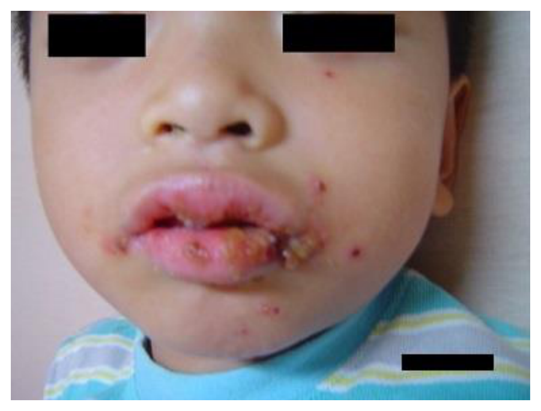
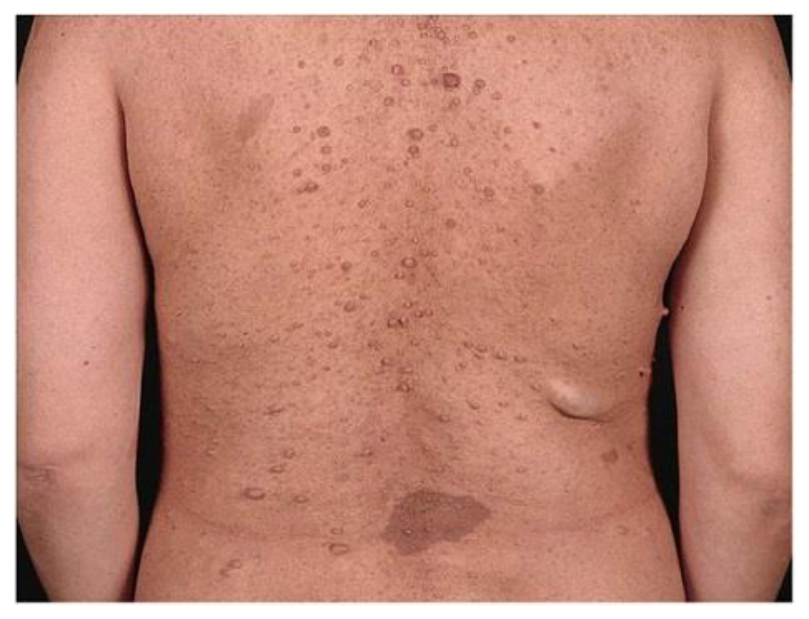
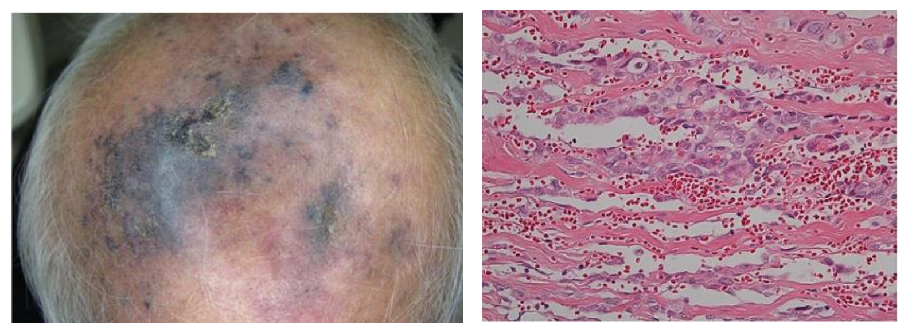
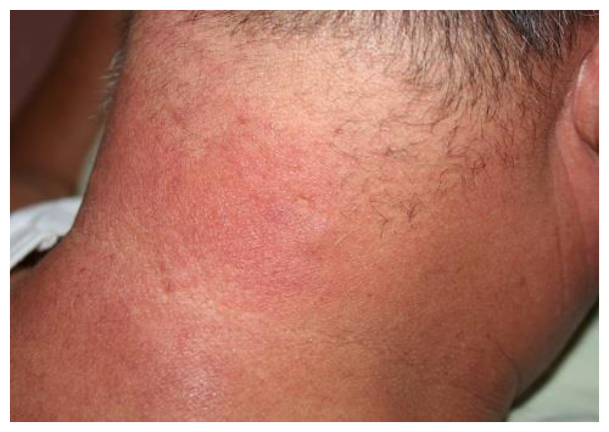
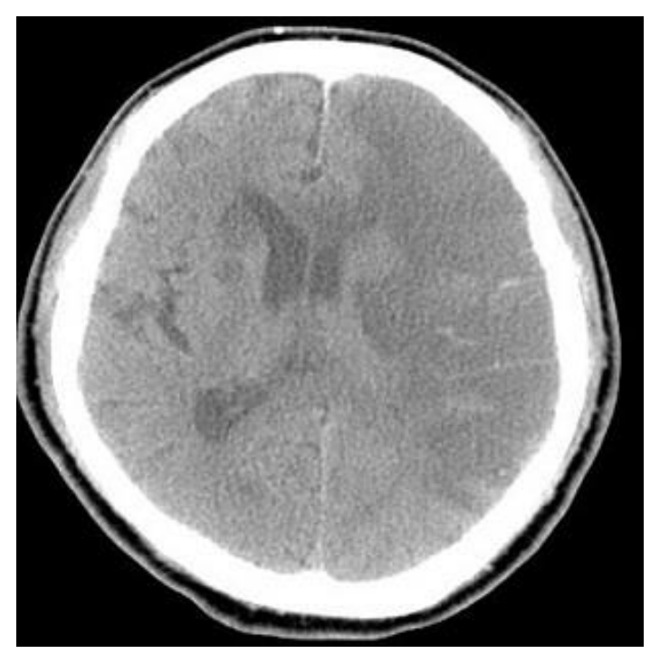
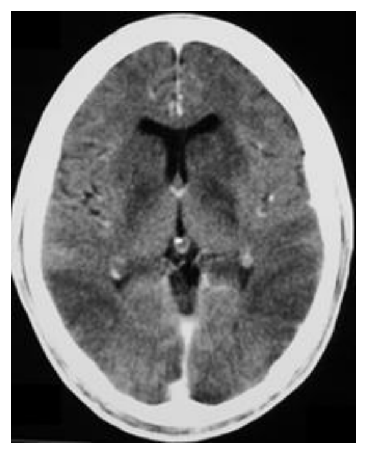

114 年第 2 次醫師醫學（四）（包括小兒科、皮膚科、神經科、精神科等科目及其相關臨床實例與醫學倫理）試題與答案
這一頁是民國 114 年第 2 次醫師醫學（四）（包括小兒科、皮膚科、神經科、精神科等科目及其相關臨床實例與醫學倫理）的整份歷屆試題，共 80 題，題目與標準答案出自考選部「國家考試試題及測驗式試題答案」開放資料，其中 80 題附有詳解。以下逐題列出題幹、選項與答案；要計時作答或記錄成績，請用線上練習。
考選部原始場次代碼：114070
線上作答這一科 →
全部 80 題
第 1 題
母親帶 5 個月大的寶寶來接種卡介苗，下列衛教說明，何項最不適當？
- （A）提醒定期幫寶寶修剪指甲，避免抓傷注射部位
- （B）注射部位 1～2 週後會呈現一個小紅結節，可能會有些微痛癢
- （C）注射部位 4～6 週後可能會有膿瘍或潰爛，需擠壓引流出膿
- （D）注射部位平均 4 個月後會開始結痂，留下淡紅色的小疤痕
答案：（C）
詳解與考點
正解：卡介苗（BCG）接種後的局部反應。注射處出現紅結節、膿皰或小潰瘍多為預期過程，應保持清潔乾燥、避免擠壓；擠壓引流反而可能造成繼發感染或延遲癒合，因此最不適當的是 C。
A：修剪指甲可減少嬰兒抓破局部病灶，屬合理的日常照護。
B：接種後數週出現局部小紅結節，可能伴輕微不適，是常見的免疫反應，衛教方向正確。
D：局部病灶會逐漸結痂並留下小疤痕，為 BCG 接種常見演變；重點是觀察是否有異常擴大或持續惡化。
本題考點：卡介苗（bacillus Calmette-Guérin, BCG）接種反應——局部結節、膿皰與結痂可為正常過程；傷口照護（wound care）——避免抓破與擠壓。
第 2 題
20 天大的寶寶來就診，媽媽主訴寶寶的大腿皺褶不對稱，下列相關檢查與結果的敘述，何者最不適當？
- （A）做大腿外展檢查，若不對稱，則外張角度小的一側有問題
- （B）嬰兒仰躺做 Galeazzi sign 檢測，若膝蓋高度不對稱，較高的一側有問題
- （C）做 Barlow test，測試未脫臼的髖關節於施壓後是否會產生脫臼現象
- （D）做 Ortolani test，測試若有處於脫臼的髖關節能否被復位
答案：（B）
詳解與考點
正解：新生兒髖關節發育不良（developmental dysplasia of the hip, DDH）的 Galeazzi sign。嬰兒屈髖屈膝仰臥時，患側股骨因髖關節脫位或半脫位而較短，患側膝蓋會較低；選項說膝蓋較高的一側有問題，方向顛倒，最不適當的是 B。
A：髖外展受限是 DDH 的重要線索，外展角度較小的一側較可疑，敘述正確。
C：Barlow test 是對仍在髖臼內但不穩定的髖關節施加後向力量，測試能否被誘發脫位，敘述正確。
D：Ortolani test 是將已脫位的股骨頭外展抬回髖臼，感到復位的喀響，敘述正確。
本題考點：髖關節發育不良（developmental dysplasia of the hip, DDH）——外展受限與 Galeazzi sign；Barlow test 檢測可脫位髖，Ortolani test 檢測可復位髖。
第 3 題
根據本國疫苗常規接種時程，對於滿 1 歲又 15 天幼兒，下列何者不是所需接種的預防針？
- （A）水痘疫苗
- （B）麻疹、腮腺炎、德國麻疹混合疫苗
- （C）第一劑日本腦炎疫苗
- （D）第三劑 13 價肺炎鏈球菌疫苗
答案：（C）
詳解與考點
正解：滿 1 歲又 15 天，應對照常規接種時程判斷滿 12 個月應接種項目。水痘疫苗、麻疹腮腺炎德國麻疹混合疫苗（MMR）與 13 價肺炎鏈球菌疫苗追加劑皆屬此年齡常規安排；第一劑日本腦炎疫苗通常不是此時點的必需接種，故選 C。此題涉及時程政策，僅就題目所用常規時程判讀。
A：水痘疫苗是滿 12 個月後的常規接種項目，符合此幼兒年齡。
B：MMR 在滿 12 個月時接種第一劑，故屬所需疫苗。
D：13 價肺炎鏈球菌疫苗的追加劑安排在 12 個月後，符合本題年齡。
本題考點：常規預防接種（routine immunization schedule）——依月齡判讀應接種疫苗；追加劑（booster dose）——須與初始劑次及政策時程區分。
第 4 題
有關新生兒 indirect hyperbilirubinemia 的成因中，下列何者屬於肝臟膽色素排除不足（decreasedhepatic bilirubin clearance）所致？
- （A）ABO incompatibility
- （B）hereditary spherocytosis
- （C）G6PD deficiency
- （D）Gilbert disease
答案：（D）
詳解與考點
正解：間接型高膽紅素血症中「肝臟排除不足」。Gilbert disease 的尿苷二磷酸葡萄糖醛酸轉移酶活性降低，使非結合型膽紅素的葡萄糖醛酸化與結合清除下降，屬 decreased hepatic bilirubin clearance，故選 D。
A：ABO incompatibility 造成免疫性溶血，主要是紅血球破壞增加、膽紅素生成過多，非肝臟清除不足。
B：hereditary spherocytosis 因紅血球膜缺陷導致溶血增加，病理核心同樣是膽紅素產生增加。
C：G6PD deficiency 在氧化壓力下可發生溶血，增加非結合型膽紅素負荷；看似都會黃疸，但不是本題所問的肝臟排除機轉。
本題考點：新生兒間接型高膽紅素血症（indirect hyperbilirubinemia）——區分膽紅素生成增加與肝臟清除下降；Gilbert disease——葡萄糖醛酸化能力下降。
第 5 題
下列關於早產兒的開放性動脈導管（patent ductus arteriosus, PDA）敘述，何者最不適當？
- （A）出生週數愈小，發生機率愈高，其他 PDA 延後關閉的風險因子包含 hypoxia、acidosis、systemichypotension 等
- （B）可能導致 left ventricular volume overload 及 pulmonary edema
- （C）若需治療，藥物可選用 prostaglandin E1（PGE1），但須注意血小板數值、是否有急性出血、腸胃道狀況及腎功能
- （D）若需 surgical ligation，術後 6～12 小時仍需注意血壓下降的狀況
答案：（C）
詳解與考點
正解：早產兒 PDA 的治療藥物。欲促進動脈導管關閉，常利用抑制前列腺素生成的藥物；prostaglandin E1（PGE1）反而維持動脈導管開放，並非關閉 PDA 的治療，因此 C 最不適當。選項所列血小板、出血、腸胃道與腎功能監測，反而是使用非類固醇抗發炎藥時應注意的事項。
A：早產程度越高 PDA 越常見，低氧、酸中毒與低血壓均可不利於導管關閉，敘述合理。
B：左向右分流增加肺血流與左心容量負荷，可造成肺水腫，敘述正確。
D：手術結紮後可能出現血流動力學不穩定，術後密切觀察血壓是合理處置。
本題考點：開放性動脈導管（patent ductus arteriosus, PDA）——左向右分流造成肺循環與左心負荷；前列腺素（prostaglandin）——PGE1 維持導管開放。
第 6 題
有關川崎氏症（Kawasaki disease）臨床症狀及治療的敘述，下列何者最不適當？
- （A）急性期出現兩眼結膜充血或口腔黏膜變化，四肢和軀幹亦可能出現不同型態的紅疹
- （B）急性期會出現手指、腳趾脫皮現象；發病約 2～3 週後會出現手腳掌紅腫的現象
- （C）急性期治療，一般建議使用免疫球蛋白合併阿斯匹靈（aspirin）治療
- （D）若免疫球蛋白使用後沒有順利退燒，可考慮再使用第二輪免疫球蛋白治療
答案：（B）
詳解與考點
正解：川崎氏症急性期與亞急性期徵象的時間順序。手掌腳掌紅腫常出現在急性期，之後約 2～3 週在恢復期出現手指、腳趾末端脫皮；B 把兩者時序對調，因此最不適當。
A：雙側非化膿性結膜充血、口腔黏膜變化與多形性紅疹，均是急性期常見表現。
C：急性期以靜脈免疫球蛋白合併 aspirin 治療，是降低冠狀動脈併發症風險的標準治療方向。
D：免疫球蛋白後持續或再發燒代表治療反應不足，可考慮追加治療，包括再給予免疫球蛋白，敘述合理。
本題考點：川崎氏症（Kawasaki disease）——急性期黏膜皮膚發炎與四肢紅腫；亞急性期（subacute phase）——指趾端脫皮；靜脈免疫球蛋白（intravenous immunoglobulin, IVIG）治療。
第 7 題
關於兒童心雜音（cardiac murmur），下列敘述何者最適當？
- （A）功能性心雜音（innocent murmur）常見於學齡前兒童，特色為高頻如音樂般（musical）的 3～4 度收縮期心雜音
- （B）連續性心雜音（continuous murmur）常在開放性動脈導管（patent ductus arteriosus）病患身體診察時聽到
- （C）法洛氏四重症（tetralogy of Fallot）常聽到射出性收縮期心雜音（systolic ejection murmur）是源自於心室中隔缺損（ventricular septal defect）
- （D）心房中隔缺損（atrial septal defect, ASD）病患的心雜音，其來源為血流由左心房經過 ASD 到右心房造成的
答案：（B）
詳解與考點
正解：continuous murmur 的典型病因。開放性動脈導管使主動脈與肺動脈在收縮、舒張期皆有壓力差與持續分流，因此可聽到連續性心雜音，故選 B。
A：功能性心雜音可呈 musical 的收縮期雜音，但通常音量較低，不以 3～4 度的明顯雜音為特色；看似抓到 musical 關鍵字，卻把強度描述過頭。
C：法洛氏四重症的射出性收縮期雜音主要源自右心室流出道狹窄，而非心室中隔缺損本身。
D：ASD 的收縮期雜音來自右心室流出道肺血流增加，並非血液直接穿越 ASD 的雜音。
本題考點：連續性心雜音（continuous murmur）——典型見於 PDA；先天性心臟病雜音定位（murmur localization）——依血流狹窄或流量增加的部位判讀。
第 8 題
下列引起兒童猝死原因所占的比例，何者最少？
- （A）QT 波延長症候群（long QT syndrome）
- （B）冠狀動脈起始部位發育異常（anomalous origin of coronary artery）
- （C）肥厚性心肌病變（hypertrophic cardiomyopathy）
- （D）二尖瓣脫垂（mitral valve prolapse）
答案：（D）
詳解與考點
正解：兒童猝死的原因中「比例最少」。long QT syndrome 可致惡性心律不整，冠狀動脈起源異常可在運動時缺血，肥厚性心肌病變亦是重要結構性猝死原因；相較之下，單純二尖瓣脫垂較少是兒童猝死原因，故選 D。此題問的是相對比例，未提供族群與定義，結論以一般考試分類為限。
A：long QT syndrome 可誘發 torsades de pointes 或心室顫動，是兒童與青少年猝死的重要遺傳性心律不整原因。
B：冠狀動脈起源異常可造成心肌缺血與致命性心律不整，尤其在劇烈活動時不能忽視。
C：肥厚性心肌病變可能造成流出道阻塞與心律不整，是年輕族群猝死的經典病因之一。
本題考點：兒童猝死（sudden cardiac death）——遺傳性心律不整與結構性心臟病；肥厚性心肌病變（hypertrophic cardiomyopathy）與冠狀動脈異常的風險辨識。
第 9 題
關於 B 型肝炎病毒，下列敘述何者最適當？
- （A）母親為 B 型肝炎帶原者，哺餵母乳會增加新生兒感染 B 型肝炎病毒的機會
- （B）B 型肝炎病毒是雙股 RNA 病毒
- （C）新生兒感染 B 型肝炎病毒後，約有 90%的機會會成為慢性 B 型肝炎患者
- （D）成人感染 B 型肝炎病毒後，約有 50%的機會會成為慢性 B 型肝炎患者
答案：（C）
詳解與考點
正解：感染年齡與慢性化機率。新生兒感染 B 型肝炎病毒後，因免疫清除能力尚未成熟，約 90%會轉為慢性感染，故 C 最適當。
A：帶原母親在適當的新生兒免疫預防下可以哺餵母乳；母乳哺餵本身不是增加垂直感染的理由。
B：B 型肝炎病毒是部分雙股 DNA 病毒，並非雙股 RNA 病毒。
D：成人感染後多數可自行清除病毒，慢性化比例遠低於 50%；看似與新生兒同為感染後慢性化，卻忽略年齡造成的巨大差異。
本題考點：B 型肝炎病毒（hepatitis B virus, HBV）——部分雙股 DNA 病毒；慢性化（chronicity）——感染年齡越小，慢性感染風險越高；母嬰垂直感染（mother-to-child transmission）預防。
第 10 題
關於肥厚性幽門狹窄（hypertrophic pyloric stenosis），下列敘述何者最適當？
- （A）是一種常見造成嬰兒嘔吐的疾病，超過 80%與其他先天性異常有關
- （B）典型的病例常見血中呈現低氯代謝性酸中毒
- （C）超音波檢查為最常用來診斷的工具，可以看到 string sign 或 pseudokidney sign
- （D）外科手術（pyloromyotomy）是有效的治療方法，若不適合手術可以使用 atropine
答案：（D）
詳解與考點
正解：肥厚性幽門狹窄的有效治療。矯正脫水與電解質異常後，pyloromyotomy 可解除幽門肌梗阻；若無法手術，atropine 可作為藥物替代策略，故選 D。
A：肥厚性幽門狹窄多為孤立性疾病，並非超過 80%與其他先天異常相關。
B：反覆嘔吐流失胃酸，典型為低氯性、低鉀性代謝性鹼中毒，不是代謝性酸中毒。
C：超音波是常用診斷工具，但 string sign 屬上消化道對比攝影徵象；pseudokidney sign 是超音波的腸道病灶徵象，典型見於腸套疊，不能列作肥厚性幽門狹窄的超音波診斷徵象。
本題考點：肥厚性幽門狹窄（hypertrophic pyloric stenosis）——非膽汁性噴射性嘔吐與低氯代謝性鹼中毒；pyloromyotomy——確立診斷後的治療。
第 11 題
關於兒童食道異物的敘述，下列何者最不適當？
- （A）好發於 5 歲以前的幼童，以錢幣誤食為最常見
- （B）症狀上可以無症狀、吞嚥困難或是呼吸喘來表現
- （C）若是 X 光無法顯影的異物，建議以鋇劑對比（barium contrast）檢查法來發現
- （D）鈕扣型電池的異物必須在 2 小時內儘快以內視鏡移除，避免潰瘍和日後食道狹窄後遺症
答案：（C）
詳解與考點
正解：食道異物的影像策略。對 X 光不顯影的異物，鋇劑可能覆蓋內視鏡視野並增加吸入風險，通常不宜作為常規發現方法；應依臨床疑慮選擇適當影像與內視鏡評估，因此 C 最不適當。
A：食道異物常見於幼兒，錢幣是典型誤食物，敘述正確。
B：食道異物可無症狀，也可因阻塞或壓迫表現吞嚥困難、流口水或呼吸道症狀。
D：鈕扣型電池在食道可迅速造成腐蝕性傷害，應緊急以內視鏡移除；2 小時是強調其急迫性的關鍵時間窗。
本題考點：兒童食道異物（esophageal foreign body）——依異物性質決定急迫性；鈕扣型電池（button battery）——食道嵌塞須緊急移除；內視鏡（endoscopy）評估。
第 12 題
學校尿液篩檢診斷了許多兒童期血尿與蛋白尿的孩童，關於其鑑別診斷，下列敘述何者最不適當？
- （A）尿液鏡檢下有棘紅細胞（acanthocyte）通常代表腎絲球來源的血尿
- （B）學齡期持續性蛋白尿，大部分為腎絲球或腎小管的病變
- （C）血尿合併血塊，或血尿只發現在末段尿液者，較可能為下泌尿道所引起的原因
- （D）腎小管性蛋白尿為低分子量蛋白質（low-molecular-weight protein），而非白蛋白（albumin）
答案：（B）
詳解與考點
正解：學齡期持續性蛋白尿的鑑別。持續性蛋白尿不必然大部分都來自腎絲球或腎小管病變，仍須先區分姿勢性蛋白尿等良性型態；B 過度概括，最不適當。
A：棘紅細胞是變形紅血球，提示紅血球通過受損腎絲球濾過屏障，支持腎絲球性血尿。
C：血塊或終末血尿提示出血位置較接近膀胱頸、尿道等下泌尿道，敘述符合定位原則。
D：腎小管無法充分回收低分子量蛋白質時會出現腎小管性蛋白尿，主要並非 albumin，敘述正確。
本題考點：蛋白尿（proteinuria）——姿勢性與持續性蛋白尿的區分；腎絲球性血尿（glomerular hematuria）——棘紅細胞提示；腎小管性蛋白尿（tubular proteinuria）——低分子量蛋白質增加。
第 13 題
8 個月大男嬰因發燒住院，實驗室檢查結果如下：WBC 18600/μL，Seg 89%，Lym 10%，Mono 1%，反應性蛋白（CRP）8.6 mg/dL，urine routine WBC＞100/HPF，尿液培養長出E. coli，colony count＞105/mL，下列處置何者最不適當？
- （A）抗生素治療要 7～14 天
- （B）應安排腎臟超音波檢查
- （C）立即腎臟皮質攝影（Tc-99m-DMSA renal cortical scan）是必要的檢查
- （D）根據 American Academy of Pediatrics guidelines，2～24 月大的病童於腎臟超音波檢查異常或反覆泌尿道感染時，應考慮 voiding cystourethrogram（VCUG）檢查
答案：（C）
詳解與考點
正解：8 個月大、發燒、膿尿與 E. coli 菌落數高，符合首次發燒性泌尿道感染。急性期首要是抗生素與腎臟超音波評估；Tc-99m-DMSA 腎皮質攝影不是所有首次個案立即必需的檢查，故 C 最不適當。
A：依病情與給藥途徑完成約 7～14 天抗生素療程，是發燒性泌尿道感染的合理治療範圍。
B：腎臟與膀胱超音波可篩檢結構異常或阻塞，適合安排。
D：在超音波異常或反覆泌尿道感染時考慮 VCUG，以評估膀胱輸尿管逆流，符合題幹所述指引方向。
本題考點：兒童發燒性泌尿道感染（febrile urinary tract infection）——抗生素與腎臟膀胱超音波；排尿性膀胱尿道攝影（voiding cystourethrogram, VCUG）——用於特定高風險情境；DMSA 腎皮質攝影——非首次急性期例行檢查。
第 14 題
38 歲的孕婦，在懷孕期間被診斷有羊水過少，男嬰出生後即發現有呼吸窘迫，腎臟超音波檢查發現雙側腎臟均呈現高回音（hyperechogenic），且腎臟體積均較正常新生兒大，但未見到明顯的囊泡（renal cysts）。下列何者為男嬰最可能的診斷？
- （A）顯性遺傳之多囊性腎病變（autosomal dominant polycystic kidney disease）
- （B）隱性遺傳之多囊性腎病變（autosomal recessive polycystic kidney disease）
- （C）多囊性腎發育不全（multicystic dysplastic kidney）
- （D）後尿道瓣（posterior urethral valves）
答案：（B）
詳解與考點
正解：羊水過少、出生即呼吸窘迫，以及雙側腎臟增大且高回音但無明顯囊泡。這是 autosomal recessive polycystic kidney disease 的典型新生兒表現：集合管擴張很細小，超音波可呈雙側巨大高回音腎而不見大囊腫；胎兒尿量少導致羊水過少與肺發育不全，故選 B。
A：顯性遺傳多囊腎病變常較晚發病，影像常見較明顯囊腫，與嚴重的新生兒表現不符。
C：多囊性腎發育不全多為單側、由大小不等的囊泡取代腎實質，與雙側對稱增大高回音腎不符。
D：後尿道瓣可造成羊水過少與腎損傷，但通常要見下泌尿道阻塞相關徵象，不能最好解釋此雙側腎臟型態。
本題考點：隱性遺傳多囊腎病變（autosomal recessive polycystic kidney disease, ARPKD）——雙側增大高回音腎；羊水過少（oligohydramnios）——可導致肺發育不全與呼吸窘迫。
第 15 題
關於 exhaled nitric oxide（FeNO），下列敘述何者最不適當？
- （A）是一種非侵入性的檢查
- （B）主要是測嗜中性血球的發炎反應
- （C）可以用來做為氣喘的輔助診斷
- （D）5 歲以上病童通常可以配合檢測
答案：（B）
詳解與考點
正解：FeNO 所反映的發炎型態。呼出一氧化氮主要反映氣道嗜酸性發炎（eosinophilic airway inflammation）及第 2 型發炎，而非嗜中性球發炎，因此 B 最不適當。
A：FeNO 以呼氣採樣完成，屬非侵入性檢查。
C：FeNO 可作為氣喘診斷與治療反應評估的輔助資料，但不能單獨取代完整病史與肺功能判讀。
D：檢查需要配合穩定吐氣動作，5 歲以上多數兒童通常可配合完成。
本題考點：呼出一氧化氮（fractional exhaled nitric oxide, FeNO）——非侵入性氣道發炎指標；嗜酸性氣道發炎（eosinophilic airway inflammation）——與氣喘第 2 型發炎相關。
第 16 題
造成早期兒童氣喘變成持續性氣喘（persistent asthma）的危險因子，下列何者最不適當？
- （A）女性
- （B）暴露於二手菸的環境
- （C）本身有異位性皮膚炎
- （D）父母親有氣喘
答案：（A）
詳解與考點
正解：早期喘鳴進展為持續性氣喘的危險因子。異位性皮膚炎、父母氣喘與二手菸暴露均支持過敏體質或持續氣道傷害；相較之下，女性不是幼年持續性氣喘的典型危險因子，故 A 最不適當。
B：二手菸暴露會增加氣道刺激與反覆喘鳴風險，是可介入的危險因子。
C：異位性皮膚炎反映 atopy，與後續持續性氣喘風險增加相關。
D：父母有氣喘代表家族過敏與氣喘傾向，會提高兒童持續性氣喘風險。
本題考點：持續性氣喘（persistent asthma）——辨識反覆喘鳴兒童的風險；異位性體質（atopy）與家族史；環境菸害（secondhand smoke）為可避免因子。
第 17 題
4 歲女童，急性腹痛和呼吸急促，呼吸異常費力且血氧下降，體溫、血壓與尿量皆正常。胸部 X 光片未發現發炎浸潤，血中二氧化碳濃度過高。此女童最有可能的診斷為何？
- （A）急性腸胃炎
- （B）急性氣喘發作
- （C）糖尿病酮酸血症（diabetic ketoacidosis, DKA）
- （D）過敏性紫斑症（anaphylactoid purpura）
答案：（B）
詳解與考點
正解：呼吸費力、低血氧與二氧化碳過高，胸部 X 光又沒有肺炎浸潤。這表示通氣不足與氣流阻塞，最符合嚴重急性氣喘發作；腹痛可為兒童氣喘時的非典型表現，故選 B。
A：急性腸胃炎可有腹痛，卻無法解釋明顯呼吸費力、低血氧與高二氧化碳。
C：DKA 會因代謝性酸中毒出現深快呼吸，二氧化碳通常因代償而降低，不會以高二氧化碳為典型。
D：過敏性紫斑症可造成腹痛，但沒有典型證據可解釋嚴重阻塞性呼吸衰竭。
本題考點：急性氣喘發作（acute asthma exacerbation）——氣流受限導致呼吸費力；高碳酸血症（hypercapnia）——提示嚴重通氣不足；DKA 的 Kussmaul respiration 是代謝性酸中毒代償。
第 18 題
關於地中海型貧血，下列敘述何者最不適當？
- （A）通常會呈現小球性貧血
- （B）造血幹細胞移植可治癒重型地中海型貧血的患者
- （C）重型β型地中海型貧血患者在一出生就會表現出貧血
- （D）重型α型地中海型貧血主要是在胎兒時期會造成胎兒水腫
答案：（C）
詳解與考點
正解：重型 β 型地中海型貧血何時表現。出生時胎兒血紅素（HbF）仍占主要比例，β 鏈需求較低；隨出生後 HbF 下降、β 鏈需求增加，重型 β 型地中海型貧血通常在出生數月後才明顯，故 C 最不適當。
A：珠蛋白鏈合成不足使血紅素生成受限，地中海型貧血通常呈小球性貧血。
B：對合適的重型患者，造血幹細胞移植可提供治癒性治療，敘述正確。
D：重型 α 型地中海型貧血可嚴重影響胎兒期氧氣攜帶，造成胎兒水腫，敘述正確。
本題考點：地中海型貧血（thalassemia）——珠蛋白鏈合成缺陷導致小球性貧血；胎兒血紅素（fetal hemoglobin, HbF）——解釋 β 型重症延後表現；胎兒水腫（hydrops fetalis）與重型 α 型地中海型貧血。
第 19 題
關於兒童急性淋巴性白血病（acute lymphoblastic leukemia, ALL），下列敘述何者最適當？
- （A）11～18 歲的兒童發生率較 0～10 歲的兒童高
- （B）初診斷時，常見周邊血液抹片有芽細胞（blast cells），血液檢查會合併貧血、血小板增多
- （C）13 歲男性，周邊血液抹片有芽細胞（blast cells），併有巨大縱隔腔腫塊（huge mediastinal mass），T-cell ALL 是最有可能的診斷
- （D）初始治療時，若發生腫瘤溶解症候群（tumor lysis syndrome），抽血檢驗可見高尿酸、高血鉀與低血磷
答案：（C）
詳解與考點
正解：青春期男孩合併巨大縱隔腔腫塊與周邊芽細胞，這是 T 細胞急性淋巴性白血病（T-cell ALL）常見的胸腺／前縱隔侵犯表現，故選 C。ALL 的表現隨細胞系而異；T-cell ALL 較常見於年長男孩，且可因縱隔腫塊造成呼吸或上腔靜脈相關症狀。
A：ALL 的發生高峰在較年幼兒童，並非 11～18 歲的發生率高於 0～10 歲；青春期較常見的是 T-cell ALL 的比例增加，不能把疾病整體發生率倒置。
B：芽細胞、貧血與血小板減少可由骨髓遭白血病細胞取代而出現；此選項把血小板變化寫成增多，與典型初診斷的骨髓衰竭表現不符。
D：腫瘤溶解症候群因細胞內鉀與磷酸鹽釋出而有高血鉀、高尿酸與高血磷；低血磷並不符合其代謝特徵。
本題考點：急性淋巴性白血病（acute lymphoblastic leukemia, ALL）的臨床表現；T 細胞急性淋巴性白血病（T-cell ALL）與前縱隔腫塊；腫瘤溶解症候群（tumor lysis syndrome）的高鉀、高磷、高尿酸。
第 20 題
3 歲男童為重型 A 型血友病（severe hemophilia A）患者，下列敘述何者最不適當？
- （A）為性聯遺傳
- （B）若有出血，常以關節或肌肉出血來表現
- （C）有出血時才需注射凝血因子，以免頻繁的注射，反而造成需要注射的時候無效
- （D）若男童遭遇危及生命的出血，需設法將凝血因子活性輸至 100%
答案：（C）
詳解與考點
正解：「最不適當」的重型 A 型血友病治療觀念。重型患者的照護不應只等出血才補充因子；規律預防性補充可減少關節反覆出血與長期關節病變。選項 C 把頻繁注射必然導致日後無效當成理由，混淆了預防治療與抑制物形成的風險，故選 C。
A：A 型血友病是 X 連鎖隱性遺傳（X-linked recessive inheritance），男童較常發病，敘述適當。
B：凝血因子 VIII 缺乏造成深部組織出血，典型為關節出血（hemarthrosis）與肌肉出血，而非以黏膜點狀出血為主，敘述正確。
D：危及生命的嚴重出血需要迅速提高凝血因子 VIII 活性至接近正常止血範圍，目標 100% 是急救時合理的處置方向，故非最不適當。
本題考點：A 型血友病（hemophilia A）是 X 連鎖隱性疾病；預防性凝血因子補充（prophylaxis）可預防關節病變；重度出血的止血需迅速補足凝血因子 VIII。
第 21 題
3 歲女童，發燒 4 天，精神活力差，血壓 60/30 mmHg，血氧飽和濃度 95%，心跳每分鐘 160 下，呼吸每分鐘50 次。有關初期休克治療目標，下列何者最適當？
- （A）心輸出量指數（cardiac index）在 1～3 L/min/m2
- （B）血壓上升到 70/40 mmHg
- （C）中央靜脈血氧濃度≧70%
- （D）尿量在 0.1～0.5 mL/kg/hr
答案：（C）
詳解與考點
正解：低血壓、心搏過速與呼吸急促的兒童休克，初期復甦要評估組織氧氣供應是否恢復。中央靜脈血氧飽和度（ScvO2）至少 70% 代表氧氣輸送與組織攝取的平衡較可接受，是早期目標導向治療可採用的目標，故選 C。
A：心輸出量指數 1～3 L/min/m2 偏低；休克復甦的目標不是維持低心輸出量，而是使灌流及氧氣輸送恢復。
B：1～10 歲兒童的低血壓門檻為收縮壓低於 70+2×年齡（歲）mmHg；3 歲的門檻為 70+2×3=76 mmHg，因此 70/40 mmHg 仍屬明顯低血壓，未達初期休克復甦的血壓目標。
D：兒童休克復甦時通常以至少約 1 mL/kg/hr 的尿量作為器官灌流目標之一，0.1～0.5 mL/kg/hr 仍顯示腎灌流不足。
本題考點：兒童敗血性休克（pediatric septic shock）的早期復甦；中央靜脈血氧飽和度（central venous oxygen saturation, ScvO2）反映全身氧氣供需；尿量是末端器官灌流指標。
第 22 題
之前健康情形良好的 3 個月男嬰兩天前開始鼻塞、流鼻水及輕微發燒，目前呼吸喘且費力。呼吸速率每分鐘75 次，心跳每分鐘 110 下，體溫 38.1℃，身體診察雙側吐氣期有 wheezing、吸氣期無濕囉音（crackles）。下列何者為最可能的診斷？
- （A）嚴重氣喘發作
- （B）細菌性肺炎
- （C）病毒性細支氣管炎
- （D）先天性心臟病
答案：（C）
詳解與考點
正解：3 個月嬰兒先有鼻塞、流鼻水與輕微發燒，後出現喘、呼吸費力及雙側吐氣 wheezing。這種上呼吸道感染後的小氣道發炎與阻塞最符合病毒性細支氣管炎（viral bronchiolitis），故選 C。年齡小、呼吸急促及喘鳴是其典型臨床組合。
A：氣喘也可有 wheezing，因此看似合理；但 3 個月初次在感冒後出現小氣道症狀，更符合細支氣管炎，且題目沒有反覆可逆喘鳴的病史。
B：細菌性肺炎較常見局部肺部浸潤徵象、濕囉音或較高發炎表現；雙側吐氣期喘鳴而無吸氣期 crackles 較指向小氣道阻塞。
D：先天性心臟病造成呼吸窘迫時常伴餵食困難、發紺、心衰竭或肺鬱血線索，不能解釋此例先有上呼吸道前驅症狀及喘鳴。
本題考點：急性細支氣管炎（acute bronchiolitis）多見於嬰幼兒；病毒性上呼吸道前驅症狀後出現 wheezing 與呼吸窘迫；須與氣喘、肺炎及心因性呼吸困難鑑別。
第 23 題
關於先天性甲狀腺低能症（congenital hypothyroidism），下列敘述何者最不適當？
- （A）成因可能為甲狀腺發育不良（thyroid dysgenesis）
- （B）早期診斷及治療對於孩子腦部及生長發育至關重要，尤其是 3 歲以前
- （C）臺灣目前的新生兒篩檢，是採集新生兒的足跟血檢驗甲狀腺素（T4）
- （D）一般建議 levothyroxine 的治療劑量為 10～15 μg/kg/day
答案：（C）
詳解與考點
正解：「最不適當」且問臺灣新生兒篩檢方法。先天性甲狀腺低下症的篩檢以足跟血檢測甲狀腺刺激素（thyroid-stimulating hormone, TSH）為核心，而不是單以 T4 作為臺灣目前篩檢的敘述，故選 C。早期發現後及時補充甲狀腺素，目的在避免不可逆的神經發展影響；篩檢流程屬公共衛生政策，可能隨制度調整而更新。
A：甲狀腺發育不良（thyroid dysgenesis）是先天性甲狀腺低下症的重要成因，敘述正確。
B：甲狀腺素對早期腦部與生長發育重要，越早診斷及治療越能避免神經認知損害；強調幼兒早期介入的方向適當。
D：新生兒常用 levothyroxine 起始治療劑量為 10～15 μg/kg/day，目標是儘速使甲狀腺素狀態正常化，敘述適當。
本題考點：先天性甲狀腺低下症（congenital hypothyroidism）的常見病因為甲狀腺發育不良；新生兒篩檢（newborn screening）使用足跟血 TSH；levothyroxine 是早期治療核心。
第 24 題
下列何種疾病最不可能造成男孩性促素非依賴型性早熟（gonadotropin-independent precociouspuberty）？
- （A）下視丘錯構瘤（hypothalamic hamartoma）
- （B）分泌人類絨毛膜促性腺激素的腫瘤（human chorionic gonadotropin-secreting tumor）
- （C）先天性腎上腺增生症（congenital adrenal hyperplasia）
- （D）家族性男性性早熟（familial male precocious puberty）
答案：（A）
詳解與考點
正解：「性促素非依賴型」性早熟，代表性類固醇由中樞下視丘—腦下垂體軸以外來源產生。下視丘錯構瘤會提早活化促性腺激素釋放激素脈衝，造成的是中樞性、性促素依賴型性早熟，故最不可能的是 A。
B：分泌 hCG 的腫瘤可刺激睪丸 Leydig 細胞產生睪固酮，屬腦下垂體 LH 以外的刺激，可造成性促素非依賴型性早熟。
C：先天性腎上腺增生症使腎上腺雄性素過量，性類固醇來源在腎上腺而非中樞軸，符合周邊性早熟。
D：家族性男性性早熟是 LH 受體活化突變造成睪丸自主性產生睪固酮，屬典型性促素非依賴型性早熟。
本題考點：中樞性性早熟（gonadotropin-dependent precocious puberty）由下視丘—腦下垂體軸提早活化；周邊性性早熟（gonadotropin-independent precocious puberty）來自性腺、腎上腺或 hCG 的自主性類固醇作用。
第 25 題
有關典型 21-羥酶缺乏（classic 21-hydroxylase deficiency）所導致先天性腎上腺增生（congenitaladrenal hyperplasia）的病人，下列敘述何者最不適當？
- （A）單純雄性化型（simple virilizing form）比失鹽型（salt-wasting form）發生率高
- （B）位於第六對染色體短臂的 CYP21 基因突變所致
- （C）大多數突變為 CYP21 基因與 pseudogene CYP21P 間的重組（recombination）所致
- （D）未及時治療，失鹽型（salt-wasting form）患者可能於出生後數週內因休克死亡
答案：（A）
詳解與考點
正解：典型 21-羥酶缺乏症的各亞型頻率。典型先天性腎上腺增生症中，失鹽型（salt-wasting form）較單純雄性化型常見，因此選項 A 把兩者的發生率顛倒，是最不適當的敘述。失鹽型因皮質醇與醛固酮生成受阻，出生後可迅速出現鹽分流失與循環衰竭。
B：21-羥酶缺乏由第六對染色體短臂的 CYP21 基因異常所致，敘述正確。
C：CYP21 與鄰近偽基因間的重組或基因轉換是常見致病機制，符合其高度同源的基因區域特性。
D：失鹽型患者若未治療，出生後數週可因低鈉、高鉀、脫水與休克而危及生命，敘述正確。
本題考點：21-羥酶缺乏症（21-hydroxylase deficiency）是最常見的先天性腎上腺增生症（congenital adrenal hyperplasia）；失鹽型（salt-wasting form）較常見且可造成新生兒腎上腺危象。
第 26 題
2 歲男童發燒 5 天，嘴唇及臉部出現許多紅疹及結痂（如圖示），經檢查發現牙齦處也有紅腫流血，身體其他部位則無疹子。最可能的致病原為何？

- （A）enterovirus
- （B）herpes simplex virus
- （C）varicella-zoster virus
- （D）Epstein-Barr virus
答案：（B）
詳解與考點
正解：圖中可見口唇周圍成群水疱破裂後形成糜爛、黃褐色結痂，合併發燒、臉部疹子與牙齦紅腫流血，符合原發性疱疹性齒齦口腔炎（primary herpetic gingivostomatitis）。此病常見於幼兒，病原為 herpes simplex virus，主要是 HSV-1；口腔黏膜與牙齦的廣泛發炎、疼痛性水疱或潰瘍，是辨識重點，故選 B。
A：enterovirus 可造成手足口病（hand-foot-and-mouth disease）或疱疹性咽峽炎（herpangina）。手足口病常見口腔潰瘍，並常伴手掌、足底或臀部疹子；本題皮疹集中於嘴唇與臉部，且有明顯齒齦炎與出血，較符合 HSV 感染。
C：varicella-zoster virus 引起水痘（varicella）時，通常會在軀幹、頭皮與四肢出現分布廣泛、不同階段並存的水疱疹，而非僅限口唇及臉部；牙齦紅腫流血也不是水痘的典型主徵。
D：Epstein-Barr virus 常引起傳染性單核球增多症（infectious mononucleosis），可有發燒、咽喉炎與淋巴結腫大，但不典型造成圖中口唇周圍群聚性糜爛結痂及急性疱疹性齒齦炎。
本題考點：原發性疱疹性齒齦口腔炎（primary herpetic gingivostomatitis）由 herpes simplex virus，通常為 HSV-1，引起發燒、廣泛齒齦炎、口腔水疱與潰瘍；手足口病（hand-foot-and-mouth disease）常合併手足或臀部疹；水痘（varicella）則以全身多階段水疱疹為特徵。
第 27 題
有關嬰幼兒急性細支氣管炎（acute bronchiolitis）之敘述，下列何者最不適當？
- （A）呼吸道融合病毒（RSV）是最常見引起急性細支氣管炎的病毒
- （B）鼻病毒（rhinovirus）可引起急性細支氣管炎
- （C）病毒性細支氣管炎常會同時伴隨細菌性感染（bacterial superinfection）
- （D）高風險族群可以施打呼吸道融合病毒（RSV）被動免疫單株抗體，以預防重症
答案：（C）
詳解與考點
正解：「最不適當」的急性細支氣管炎敘述。細支氣管炎主要是病毒造成的小氣道發炎，細菌性重複感染不是常見的同時表現，也不是例行給抗生素的理由，故選 C。臨床處置以氧合、補充水分與呼吸支持等支持性治療為主。
A：呼吸道融合病毒（respiratory syncytial virus, RSV）是嬰幼兒急性細支氣管炎最常見的病原，敘述正確。
B：鼻病毒（rhinovirus）也能造成急性細支氣管炎；RSV 最常見不等於其他呼吸道病毒不會致病。
D：高風險嬰兒可使用抗 RSV 的被動免疫單株抗體降低重症風險，屬預防重症的適當策略，非本題錯誤敘述。
本題考點：急性細支氣管炎（acute bronchiolitis）是病毒性小氣道疾病；RSV 是常見病原；被動免疫（passive immunization）可用於特定高風險族群的 RSV 重症預防。
第 28 題
10 個月大的男嬰，高燒 3 天，無明顯呼吸道及腸胃道症狀，血液檢查顯示血中白血球數為 6,800/mm3，中性球 45%，淋巴球 48%，單核球 7%，血色素（hemoglobin）值為 10.8 g/dL，血小板數為 350,000/mm3，C-反應蛋白（C-reactive protein）數值為 0.5 mg/dL，尿液分析顯示尿蛋白 30 mg/dL，WBC 3～5/HPF，RBC 0～2/HPF，下列的診斷何者最有可能？
- （A）嬰兒玫瑰疹（roseola infantum）
- （B）急性腎盂腎炎（acute pyelonephritis）
- （C）德國麻疹（rubella）
- （D）川崎氏症（Kawasaki disease）
答案：（A）
詳解與考點
正解：10 個月嬰兒高燒 3 天但沒有局部感染症狀，白血球與 C-反應蛋白不高、尿液白血球也很少。嬰兒玫瑰疹常在 6 個月至 2 歲出現數天高燒、一般檢驗缺乏細菌感染證據，退燒後才出疹，最符合此例，故選 A。
B：急性腎盂腎炎可使嬰兒發燒，但通常有較明顯膿尿、尿培養證據或發炎指標上升；WBC 3～5/HPF 與低 CRP 不支持。
C：德國麻疹常見出疹、耳後或枕部淋巴結腫大等線索；單純高燒而尚未有典型皮疹不符合其常見表現。
D：川崎氏症需警覺持續發燒及黏膜皮膚、結膜或四肢變化；目前僅發燒 3 天且發炎指標低、血小板正常，支持度低。
本題考點：嬰兒玫瑰疹（roseola infantum）由人類疱疹病毒造成，典型為嬰幼兒先高燒後出疹；尿液檢查與發炎指標有助區分泌尿道細菌感染；川崎氏症（Kawasaki disease）須結合持續發燒與特徵性臨床表現判讀。
第 29 題
因核黃疸（kernicterus）造成的腦性麻痺，最常為下列何者？
- （A）spastic hemiplegia
- （B）spastic diplegia
- （C）spastic quadriplegia
- （D）athetoid cerebral palsy
答案：（D）
詳解與考點
正解：核黃疸造成的腦性麻痺型態。未結合膽紅素沉積並傷害基底核等深部腦結構，會使姿勢張力與不自主動作控制失常，典型是手足徐動型腦性麻痺（athetoid cerebral palsy），故選 D。
A：痙攣性偏癱常與單側大腦半球損傷或中風相關，並非核黃疸的典型後遺症。
B：痙攣性雙下肢麻痺常見於早產兒腦室周圍白質軟化，病灶及臨床型態都與核黃疸不同。
C：痙攣性四肢麻痺可見於嚴重廣泛性腦傷，但核黃疸最具鑑別性的表現仍是不自主動作型而非痙攣型。
本題考點：核黃疸（kernicterus）是嚴重未結合高膽紅素血症的神經毒性後果；基底核（basal ganglia）損傷可造成手足徐動型腦性麻痺（athetoid cerebral palsy）。
第 30 題
關於注意力不集中過動症（attention-deficit/hyperactivity disorder, ADHD）的敘述，下列何者最不適當？
- （A）母親懷孕過程中使用非法藥物或喝酒過量可能為致病危險因子之一
- （B）有癲癇、神經皮膚症候群的兒童中有較高機率發生 ADHD 共病症
- （C）兒童是否有 ADHD 跟基因並沒有關聯
- （D）ADHD 的核心症狀為注意力不集中、過動及衝動控制不佳，學童盛行率約為 5～10%
答案：（C）
詳解與考點
正解：ADHD 與基因是否相關。注意力不足過動症具有明顯遺傳傾向，是多基因與環境因素共同作用的神經發展疾患；選項 C 說完全沒有關聯，過度絕對而錯誤，故選 C。
A：孕期酒精暴露與非法藥物使用可增加兒童神經發展問題的風險，是 ADHD 可能相關的環境危險因子，敘述適當。
B：癲癇與神經皮膚症候群的兒童可有較高的 ADHD 共病率，反映神經發展疾患間常有重疊，敘述正確。
D：注意力不集中、過動與衝動是 ADHD 核心症狀；學童盛行率約 5～10% 是常用的概略範圍，敘述適當。
本題考點：注意力不足過動症（attention-deficit/hyperactivity disorder, ADHD）是神經發展疾患；遺傳性（heritability）與環境暴露共同影響風險；共病症（comorbidity）在癲癇與神經皮膚症候群兒童較常見。
第 31 題
第一次發作之多發性硬化症（multiple sclerosis, MS）與急性瀰漫性腦脊髓炎（acute disseminatedencephalomyelitis, ADEM）之鑑別診斷，下列何者最不適當？
- （A）多發性硬化症較常發生於 10 歲以上
- （B）多發性硬化症病人較常有單側之視神經炎
- （C）多發性硬化症病人較少出現癲癇
- （D）視丘、基底核之 MRI 變化較常出現於多發性硬化症病人
答案：（D）
詳解與考點
正解：首次發作時 MS 與 ADEM 的影像鑑別。視丘與基底核等深灰質病灶較常見於 ADEM，而非多發性硬化症（MS）；選項 D 將此趨勢反過來，因此最不適當，故選 D。ADEM 常在感染後呈現較瀰漫、可合併腦病變的發炎性中樞神經病灶。
A：MS 在較大兒童及青少年較常見，10 歲以上是支持 MS 的年齡線索之一，敘述適當。
B：單側視神經炎較支持 MS；ADEM 的視神經炎較可能是雙側或伴隨廣泛腦部症狀，因此此項看似只是眼科表現，實可作為鑑別線索。
C：ADEM 較常合併腦病、癲癇或瀰漫性症狀；MS 相對較少以癲癇表現，敘述適當。
本題考點：多發性硬化症（multiple sclerosis, MS）與急性瀰漫性腦脊髓炎（acute disseminated encephalomyelitis, ADEM）的鑑別；ADEM 較常有深灰質病灶與腦病變；MS 較常見於年長兒童並可有單側視神經炎。
第 32 題
3 歲女童因為呼吸喘來兒童急診，下列合併的臨床特徵或病史中，何者不是發展至呼吸衰竭的高風險病況？
- （A）吞了一顆鈕扣電池
- （B）有氣切管的患者
- （C）在家有短暫發紺，到院血氧都正常
- （D）吞了一顆磁鐵，目前無呼吸窘迫表現
答案：（D）
詳解與考點
正解：判斷「不是」進展成呼吸衰竭的高風險情況。單獨吞下磁鐵且目前沒有呼吸窘迫，主要要警覺的是多顆磁鐵或磁鐵與金屬造成腸道夾壓傷害，並非直接的呼吸道高風險，故選 D。
A：鈕扣電池若卡在食道可迅速造成腐蝕性傷害、穿孔及鄰近呼吸道併發症，需緊急處理，屬高風險情境。
B：氣切管患者可能因分泌物阻塞、脫管或感染迅速惡化成呼吸衰竭，呼吸窘迫時要高度警覺。
C：在家曾短暫發紺即使到院血氧正常，也可能是間歇性低氧或呼吸事件；正常單次量測看似令人安心，卻不能排除再度惡化的風險。
本題考點：兒童呼吸衰竭（respiratory failure）的風險評估；鈕扣電池（button battery）食入可造成緊急食道與氣道併發症；磁鐵食入的主要危險為腸胃道損傷。
第 33 題
若一位唐氏症患者其染色體檢查結果為父母其中一位為 21;21 轉位帶因者（translocation (21;21)carrier）導致，則此對父母再生出活產新生兒為唐氏症的機率為何？
- （A）5～7%
- （B）25%
- （C）50%
- （D）100%
答案：（D）
詳解與考點
正解：其中一位父母為 21;21 Robertsonian 轉位帶因者，且題目限定「活產新生兒」。帶因者可形成帶有兩條 21 號染色體的配子或不帶 21 號染色體的配子；與正常配子受精後，後者形成 21 單體通常無法存活，前者形成 21 三體。因此能活產者皆為唐氏症，機率 100%，故選 D。
A：5～7% 是部分其他型態轉位的復發風險概念，不能套用到 21;21 轉位帶因者。
B：25% 是常見孟德爾遺傳比例的誘答，但本題配子組合不是四種表現型均等分離的情況。
C：50% 若只從兩類受精產物看似合理；然而不帶 21 號染色體所致的單體 21 無法成為活產新生兒，故不能以所有受精產物直接當作活產風險。
本題考點：Robertsonian 轉位（Robertsonian translocation）可造成唐氏症（Down syndrome）；21;21 轉位帶因者的受精產物為 21 三體或 21 單體；活產風險（live-birth risk）須排除不可存活的單體 21。
第 34 題
下列何者不適合用在異位性皮膚炎（atopic dermatitis）的治療？
- （A）免疫抑制劑（immunosuppressants）
- （B）長期口服類固醇（long term oral corticosteroid）
- （C）外用類固醇（topical corticosteroid）
- （D）窄波紫外線 B 光（narrow band UVB）
答案：（B）
詳解與考點
正解：異位性皮膚炎的「不適合」治療。長期全身口服類固醇雖可短暫壓制發炎，但停藥反彈、感染、代謝與骨骼等不良反應使其不宜作為長期治療，故選 B。異位性皮膚炎的長期策略是皮膚保濕、避開誘發因子與適當的抗發炎局部或系統治療。
A：對嚴重且難治的病例，特定免疫調節或免疫抑制治療可在專科評估下使用，因此不能一概視為不適合。
C：外用類固醇是控制異位性皮膚炎發炎病灶的重要治療；關鍵是依部位、病情與療程選擇適當強度，而非排除使用。
D：窄波 UVB 可作為中重度、局部治療不足時的光照治療選項，並非不適合的治療。
本題考點：異位性皮膚炎（atopic dermatitis）的階梯治療；外用類固醇（topical corticosteroid）是發炎控制主力；長期口服類固醇（long-term oral corticosteroid）因全身不良反應與反彈風險而不宜常規使用。
第 35 題
下列何種病理特徵最不會在乾癬病灶中表現？
- （A）角質層出現嗜中性球（neutrophils in corneal layer）
- （B）表皮層出現規則棘狀增生（regular acanthosis）
- （C）表皮下出現水疱（subepidermal blisters）
- （D）真皮層出現增加的單核球（mononuclear cells）
答案：（C）
詳解與考點
正解：乾癬的病理特徵中「最不會」出現者。乾癬是表皮增生與角質形成異常的發炎疾病，病灶可見規則棘狀增生、角質層嗜中性球及真皮發炎細胞；表皮下水疱屬表皮—真皮交界分離的水疱性疾病表現，非典型乾癬，故選 C。
A：角質層嗜中性球聚集可形成 Munro microabscess，是乾癬的經典病理所見。
B：規則棘狀增生（regular acanthosis）反映表皮增生，是乾癬常見的組織學特徵。
D：真皮淺層可有單核球等發炎細胞浸潤，與乾癬的慢性發炎背景相符。
本題考點：乾癬（psoriasis）的組織病理學包括規則棘狀增生（regular acanthosis）與 Munro microabscess；表皮下水疱（subepidermal blister）較指向水疱性自體免疫疾病。
第 36 題
關於結節性癢疹（prurigo nodularis）及慢性單純性苔癬（lichen simplex chronicus）的敘述，下列何者錯誤？
- （A）四肢伸側是好發的部位
- （B）通常會有難以控制的劇癢症狀
- （C）誘發原因主要是癢，進而慢性地摩擦搔抓所致
- （D）此二疾病若發生在異位性皮膚炎的患者，通常年紀較長
答案：（D）
詳解與考點
正解：結節性癢疹與慢性單純性苔癬在異位性皮膚炎患者的年齡關係。異位性皮膚炎相關的慢性搔癢與搔抓病灶可見於較年輕患者；說「通常年紀較長」並非此二疾病的正確共通描述，故選 D。
A：結節性癢疹常見於四肢伸側；慢性單純性苔癬也可出現在反覆可搔抓部位，四肢是合理好發區域，敘述適當。
B：難以控制的劇癢是兩者共同核心症狀，正因嚴重癢感才會持續造成搔抓循環。
C：癢感引發摩擦與搔抓，搔抓又使皮膚增厚、病灶更癢，形成癢—搔抓循環（itch-scratch cycle），敘述正確。
本題考點：結節性癢疹（prurigo nodularis）與慢性單純性苔癬（lichen simplex chronicus）皆與慢性搔癢及搔抓相關；癢—搔抓循環（itch-scratch cycle）造成皮膚苔癬化與持續病灶。
第 37 題
Imiquimod 用於治療尖圭濕疣（condyloma acuminatum）的主要機轉為：
- （A）去角化作用
- （B）直接毒殺病毒
- （C）抑制病毒複製
- （D）增強宿主免疫反應
答案：（D）
詳解與考點
正解：imiquimod 治療尖圭濕疣的「主要機轉」。imiquimod 是局部免疫反應調節劑，經由先天免疫受體訊號促進細胞激素反應並增強抗病毒的宿主免疫清除，而非直接殺死或直接抑制病毒複製，故選 D。
A：去角化作用是角質溶解類治療的概念，不能說明 imiquimod 清除人類乳突病毒感染的作用。
B：直接毒殺病毒是某些外用破壞性治療可能的思路；imiquimod 的作用重點在調節宿主免疫，不是直接病毒毒殺。
C：抑制病毒複製容易讓人聯想到抗病毒藥，但 imiquimod 並非以直接阻斷病毒複製酶為主要機轉。
本題考點：imiquimod 是免疫反應調節劑（immune response modifier）；尖圭濕疣（condyloma acuminatum）與人類乳突病毒（human papillomavirus, HPV）感染相關；局部免疫活化（local immune activation）可促進病毒感染病灶清除。
第 38 題
49 歲男性，三天前右下腰部有刺痛感，開始使用痠痛藥布，就診時發現該處出現數顆小水疱及紅色丘疹，伴隨輕微癢感，下列敘述何者正確？
- （A）需做 Tzanck smear，正確做法為取水疱內澄清液體去做染色
- （B）Tzanck smear 出現多核巨細胞並無法辨別是單純性疱疹（herpes simplex）或是帶狀疱疹（herpeszoster）
- （C）如果病患沒有神經痛或搔癢，就可以排除帶狀疱疹（herpes zoster）
- （D）此病患否認小時候有得過水痘，一定不可能是帶狀疱疹
答案：（B）
詳解與考點
正解：群聚小水疱合併刺痛，需辨別帶狀疱疹與單純性疱疹的檢查意義。Tzanck smear 若見多核巨細胞，只證實疱疹病毒造成的細胞病變，無法區分單純性疱疹與帶狀疱疹，故選 B。臨床上可依皮節分布、症狀與需要時的特異性檢驗進一步鑑別。
A：Tzanck smear 應由水疱底部刮取細胞製片，不是取水疱內澄清液體；重點是取得受感染上皮細胞。
C：帶狀疱疹可有疼痛、搔癢或無症狀，缺乏神經痛或搔癢不能排除診斷；皮疹分布與病程仍須一起判讀。
D：病人未記得童年水痘不代表未感染過水痘帶狀疱疹病毒；既往感染可能不被記得，不能據此斷言不可能為帶狀疱疹。
本題考點：Tzanck smear 可見多核巨細胞（multinucleated giant cells）但不能區分 HSV 與 VZV；帶狀疱疹（herpes zoster）是水痘帶狀疱疹病毒（varicella-zoster virus, VZV）再活化。
第 39 題
一位皮膚多發性神經纖維瘤（neurofibromatosis）的病患，臨床上看到皮膚有許多摸起來很軟且大小不一的皮膚腫瘤，甚至在皮膚腫瘤的表皮上輕壓時，觸診的指頭可以感覺凹陷進皮膚內。上述的臨床特性稱為下列何者？

- （A）Apple-jelly sign
- （B）Buttonhole sign
- （C）Auspitz sign
- （D）Nikolsky sign
答案：（B）
詳解與考點
正解：圖中軀幹可見多發、大小不一的柔軟皮膚色至褐色丘疹與結節，符合皮膚神經纖維瘤（cutaneous neurofibroma）。此類腫瘤受壓時可由表皮向下陷入真皮，手指如同壓過鈕扣孔般感到凹陷，稱為 buttonhole sign，故選 B。
A：apple-jelly sign 是以玻片壓診（diascopy）時，狼瘡性尋常痤瘡等肉芽腫性皮膚病灶呈現蘋果果凍色的表現；它不是神經纖維瘤受壓凹陷的觸診徵象。
C：Auspitz sign 指刮除乾癬（psoriasis）鱗屑後，因真皮乳突微血管暴露而出現點狀出血；與本題柔軟皮膚腫瘤的壓陷現象不同。
D：Nikolsky sign 指對脆弱表皮或近病灶皮膚施加切向壓力時，表皮剝離或延伸，可見於天疱瘡（pemphigus）等表皮內水泡疾病；本題是結節向下壓陷，並非表皮剝離。
本題考點：皮膚神經纖維瘤（cutaneous neurofibroma）是第一型神經纖維瘤病（neurofibromatosis type 1, NF1）的常見皮膚表現；鈕扣孔徵象（buttonhole sign）是柔軟神經纖維瘤受壓陷入皮膚的典型觸診發現；應與乾癬的 Auspitz sign、天疱瘡的 Nikolsky sign 及肉芽腫病灶的 apple-jelly sign 區分。
第 40 題
89 歲的老先生，過去兩年來頭皮上陸續出現多個類似瘀傷的斑塊（如圖所示），最近病灶出現疼痛的症狀，因此求診並接受皮膚切片手術。病理圖像如附圖（H&E stain, 400X）。下列何者為最可能的診斷？

- （A）基底細胞癌（basal cell carcinoma）
- （B）血管肉瘤（angiosarcoma）
- （C）皮脂腺癌（sebaceous carcinoma）
- （D）鱗狀細胞癌（squamous cell carcinoma）
答案：（B）
詳解與考點
正解：高齡男性頭皮出現逐漸擴大的多發性瘀青樣紫黑色斑塊，為頭皮血管肉瘤的典型臨床表現。圖中 H&E 可見不規則、互相吻合的血管腔隙穿插並剝離真皮膠原束，血管內皮細胞具異型性；這反映惡性血管內皮細胞形成的浸潤性血管通道。結合病灶後期疼痛，最可能為血管肉瘤（angiosarcoma），故選 B。
A：基底細胞癌（basal cell carcinoma）常為珍珠樣丘疹、潰瘍或具捲曲邊緣的病灶，組織學以基底樣細胞巢、周邊柵欄狀排列及腫瘤巢周圍裂隙為主；不會呈現圖中的不規則血管腔隙沿膠原束浸潤，也較不符合多發瘀青樣頭皮斑塊。
C：皮脂腺癌（sebaceous carcinoma）可見具有泡沫狀、空泡化脂質豐富細胞質的皮脂腺分化腫瘤細胞，常見於眼瞼及其周圍；本圖主體是異型血管內皮形成的裂隙狀血管通道，沒有皮脂腺分化的形態，故不符。
D：鱗狀細胞癌（squamous cell carcinoma）通常表現為角化性丘疹、斑塊或潰瘍，病理可見侵犯性異型鱗狀細胞巢、角化珠或細胞間橋；本圖未見此類鱗狀分化，反而呈現血管性腫瘤特徵，故非此診斷。
本題考點：血管肉瘤（angiosarcoma）常發生於高齡者頭皮與臉部，早期可偽裝成瘀傷或紫斑；病理為不規則吻合的血管通道浸潤真皮、沿膠原束剝離，並由異型血管內皮細胞襯覆；須與具鱗狀、基底樣或皮脂腺分化的皮膚癌區分。
第 41 題
55 歲男性病人，後頸部出現腫塊已經數個月了。病理切片顯示 pandermal thickening with broad collagenbundles separated by mucin deposits。下列何者是此皮膚症狀較可能合併的疾病？

- （A）糖尿病
- （B）甲狀腺功能低下
- （C）貧血
- （D）尿毒症
答案：（A）
詳解與考點
正解：圖中後頸呈瀰漫、木質樣增厚的皮膚腫脹；配合病理的全真皮增厚、粗大膠原束之間有黏液素（mucin）沉積，符合硬皮病樣水腫（scleredema adultorum）。其慢性型常見於糖尿病病人，故選 A。
B：甲狀腺功能低下可造成黏液性水腫（myxedema），但典型是糖胺聚醣沉積造成的非凹陷性水腫，並非以後頸木質樣硬化及粗大膠原束分離為主要表現。
C：貧血沒有與硬皮病樣水腫相關的典型合併症關係，無法解釋本題特徵性的後頸皮膚與病理表現。
D：尿毒症病人可發生腎因性全身纖維化（nephrogenic systemic fibrosis），但多累及四肢並伴皮膚硬化、攣縮，病理與本題後頸為主的硬皮病樣水腫表現不同。
本題考點：硬皮病樣水腫（scleredema adultorum）常累及後頸、上背與肩部，病理見真皮增厚及膠原束間黏液素沉積；糖尿病相關硬皮病樣水腫（scleredema diabeticorum）是其重要慢性型關聯。
第 42 題
下列有關白斑（vitiligo）之敘述，何者錯誤？
- （A）約 20%病患會合併自體免疫疾病，其中最常見的為自體免疫甲狀腺疾病
- （B）主要成因為黑色素細胞（melanocyte）功能下降，黑色素（melanin）製造減少所致
- （C）活性期可見 Koebner phenomenon
- （D）伍氏燈（Wood lamp）為一種紫外光，照射於皮膚後可以讓病灶與正常皮膚色差更加明顯，協助診斷白斑
答案：（B）
詳解與考點
正解：白斑的錯誤病因敘述。白斑的主要病理是黑色素細胞遭破壞或缺失，導致局部無法形成黑色素；不是黑色素細胞仍存在但功能單純下降，故選 B。
A：白斑與自體免疫疾病有關，尤其常合併自體免疫甲狀腺疾病，約 20% 的概略敘述符合常見臨床認知。
C：活動性白斑可出現 Koebner phenomenon，即皮膚受外傷或摩擦後在受傷部位產生新病灶，敘述正確。
D：Wood lamp 的紫外線照射可增強白斑病灶與正常皮膚的對比，對判定脫色範圍與協助診斷有用，敘述適當。
本題考點：白斑（vitiligo）是以黑色素細胞（melanocyte）破壞或缺失為主的自體免疫相關疾病；Koebner phenomenon 可提示活動性病灶；Wood lamp 有助顯示脫色病灶邊界。
第 43 題
發生於黏膜部位的神經瘤（mucosal neuromas）常見於下列何者？
- （A）史特基–韋伯氏症候群（Sturge-Weber syndrome）
- （B）多發性內分泌腫瘤，第 IIb 型（multiple endocrine neoplasia, type IIb）
- （C）Gardner 症候群（Gardner syndrome）
- （D）Gorlin 症候群（Gorlin syndrome）
答案：（B）
詳解與考點
正解：黏膜神經瘤（mucosal neuromas）。多發性內分泌腫瘤第 IIb 型（MEN 2B）典型表現包括黏膜神經瘤、髓質甲狀腺癌與嗜鉻細胞瘤；可見於嘴唇、舌頭及腸胃道黏膜，故選 B。
A：史特基–韋伯氏症候群以臉部葡萄酒色斑、軟腦膜血管瘤及青光眼為代表，並非黏膜神經瘤。
C：Gardner 症候群屬家族性腺瘤性息肉病的表現型，常合併大腸腺瘤、骨瘤與表皮囊腫；神經瘤不是其典型線索。
D：Gorlin 症候群常見多發基底細胞癌、顎骨角化囊腫及骨骼異常，看似也是多系統遺傳腫瘤症候群，卻不以黏膜神經瘤為特徵。
本題考點：多發性內分泌腫瘤第 IIb 型（multiple endocrine neoplasia type 2B）——黏膜神經瘤是高度辨識性的外觀線索；髓質甲狀腺癌（medullary thyroid carcinoma）與嗜鉻細胞瘤（pheochromocytoma）為重要相關腫瘤。
第 44 題
前脈絡叢動脈（anterior choroidal artery）阻塞造成的缺血性腦中風，下列何者是最不常見的臨床症狀？
- （A）半邊視野缺損（hemianopia）
- （B）半邊肢體無力（hemiplegia）
- （C）感覺功能下降（hypesthesia）
- （D）半邊忽略（hemineglect）
答案：（D）
詳解與考點
正解：前脈絡叢動脈供應內囊後肢、視束或外側膝狀體及部分深部結構；阻塞的經典三徵為對側偏癱、對側感覺缺損與對側同向偏盲。半邊忽略多和非優勢頂葉皮質或較大範圍中大腦動脈病灶有關，不是此動脈梗塞的常見表現，故選 D。
A：半邊視野缺損可由視束、外側膝狀體或視放射受損造成，是前脈絡叢動脈梗塞可出現的症狀。
B：內囊後肢含皮質脊髓束，受損可造成對側半邊肢體無力，故符合。
C：內囊的感覺傳導纖維受影響時可有對側感覺功能下降，亦屬典型三徵之一。
本題考點：前脈絡叢動脈症候群（anterior choroidal artery syndrome）——內囊後肢病灶造成偏癱與感覺缺損；視路病灶造成同向視野缺損；半邊忽略（hemineglect）較指向頂葉網絡病灶。
第 45 題
基底動脈頂端阻塞（top of the basilar artery occlusion）影響較少的結構為：
- （A）中腦（midbrain）
- （B）橋腦（pons）
- （C）視丘（thalamus）
- （D）枕葉（occipital lobe）
答案：（B）
詳解與考點
正解：基底動脈頂端阻塞影響的是基底動脈分叉處及其遠端供血區，主要牽涉後大腦動脈與上小腦動脈相關區域，因此可累及中腦、視丘及枕葉。橋腦主要由基底動脈中段發出的穿通支供應，離頂端病灶較遠，受影響較少，故選 B。
A：中腦鄰近基底動脈頂端並接受相關穿通支供應，頂端阻塞可造成眼球運動與意識障礙。
C：後大腦動脈的深穿通支供應視丘，故視丘梗塞是頂端阻塞的重要表現。
D：枕葉由後大腦動脈皮質支供應；頂端阻塞可造成視覺症狀或枕葉梗塞，看似皮質結構較遠，實際仍在其下游供血範圍。
本題考點：基底動脈頂端症候群（top of the basilar syndrome）——後大腦動脈與其深穿通支受累，可影響中腦、視丘、枕葉；橋腦主要對應較近端的基底動脈分支。
第 46 題
67 歲男性病人，被家人發現突然無法言語及右側肢體無力，之後意識逐漸昏迷，其腦部電腦斷層掃描如下，針對此病人所做的降腦壓治療，何者最不適當？

- （A）將病床頭側抬高 20～30 度
- （B）高滲透壓製劑治療
- （C）類固醇治療
- （D）過度換氣法（hyperventilation）治療
答案：（C）
詳解與考點
正解：影像可見單側大腦半球大片低密度、腦溝受壓消失，符合大範圍缺血性腦中風合併腦水腫與顱內壓升高。此時主要是細胞毒性腦水腫（cytotoxic edema），類固醇無法改善缺血性腦梗塞造成的腦水腫，故最不適當的是 C。
A：將床頭抬高 20～30 度可促進頸靜脈回流、減少顱內容積鬱積，通常有助於降低顱內壓；同時須避免頸部扭曲或過度抬高而影響腦灌流，故不是最不適當處置。
B：高滲透壓製劑可藉滲透壓梯度將水分自腦組織移至血管內，作為顱內壓升高時的急性降壓措施，故可考慮使用。
D：過度換氣會降低 PaCO2、造成腦血管收縮，因而短暫降低腦血流量與顱內壓；雖不宜長期常規使用，以免加重缺血，但在急性腦壓危象時可作為暫時性措施，故非最不適當。
本題考點：缺血性腦中風（ischemic stroke）的細胞毒性腦水腫；顱內壓升高（increased intracranial pressure）的急性處置；類固醇（corticosteroid）對腦腫瘤相關血管性腦水腫較有角色，並非缺血性腦水腫的治療。
第 47 題
34 歲女性，左側眼窩內頭痛，有時會延伸到左側額顳區，每次發作約 2～45 分鐘，一天發作至少 5 次以上，發作時伴隨左側流眼淚和流鼻水並會干擾她的日常生活。頭痛 3 天內會自動緩解，神經影像學檢查正常。下列何種藥物對她特別有療效？
- （A）verapamil
- （B）carbamazepine
- （C）acetaminophen
- （D）indomethacin
答案：（D）
詳解與考點
正解：短暫、頻繁的單側眼眶頭痛，合併同側流淚與流鼻水，且連日反覆發作，符合陣發性偏側頭痛（paroxysmal hemicrania）的三叉自律神經性頭痛型態。此病對 indomethacin 有近乎特異性的顯著反應，是最具鑑別力的治療線索，故選 D。
A：verapamil 常用於叢集性頭痛的預防；叢集性頭痛單次發作通常更久、每日次數通常較少，不能取代 indomethacin 反應作為本題診斷線索。
B：carbamazepine 是三叉神經痛等神經痛的重要藥物，但三叉神經痛是電擊樣短痛，通常沒有這種突出的自律神經症狀組合。
C：acetaminophen 可作一般止痛，無法作為此類頭痛的特異性治療。
本題考點：陣發性偏側頭痛（paroxysmal hemicrania）——單側短暫高頻頭痛合併同側自律神經症狀；indomethacin-responsive headache 是其重要辨識特徵；須與叢集性頭痛（cluster headache）區分。
第 48 題
26 歲女性，兩年來晚上睡眠中會突然出現臉部表情驚恐，四肢亂動，約持續 20 秒後結束。發作後意識清楚，能正確對答，每次發作的表現都一樣。最近三個月幾乎每晚發作 5 次以上，且都是叢發性（cluster）發作，白天午睡時偶爾也會發作，清醒時則完全正常，最可能的診斷為下列何者？
- （A）恐慌症（panic disorder）
- （B）異睡症（parasomnia）
- （C）額葉癲癇（frontal lobe epilepsy）
- （D）顳葉癲癇（temporal lobe epilepsy）
答案：（C）
詳解與考點
正解：睡眠中反覆出現時間很短、刻板一致的驚恐表情與四肢亂動，且每晚可叢發多次、發作後迅速清醒對答，最符合額葉癲癇（frontal lobe epilepsy）的夜間運動性發作。額葉發作常短暫、動作表現複雜而誇張，並可在睡眠中高頻叢發，故選 C。
A：恐慌症可有強烈恐懼與自律神經症狀，但通常不是睡眠中完全相同的 20 秒刻板運動發作，也不會如此密集叢發。
B：異睡症也發生於睡眠中，因此看似相近；但異睡症常較持久、非如此刻板且不常每夜多次短暫叢發，故較不符。
D：顳葉癲癇可有自動症與意識改變，但本題以極短、夜間高頻、誇張運動表現為主，更支持額葉起源。
本題考點：額葉癲癇（frontal lobe epilepsy）——常見短暫、刻板、睡眠相關且可叢發的運動性癲癇發作；異睡症（parasomnia）是重要鑑別診斷。
第 49 題
針對生育年齡婦女的癲癇治療，在致畸胎特性上，應最優先考慮下列那一種藥品？
- （A）valproate
- （B）topiramate
- （C）lamotrigine
- （D）phenytoin
答案：（C）
詳解與考點
正解：生育年齡婦女選擇抗癲癇藥時，關鍵是致畸胎風險。lamotrigine 的先天畸形風險相對較低，且為女性癲癇患者常優先考慮的藥物之一；仍須依癲癇型態與個別控制情形決定，故選 C。
A：valproate 的致畸胎與神經發育風險較高，是最需避免或審慎衡量的誘答。
B：topiramate 亦有胎兒風險考量，並非本題四者中優先選項。
D：phenytoin 可造成胎兒 hydantoin syndrome 等致畸胎風險，不能因其為傳統抗癲癇藥就視為優先。
本題考點：妊娠與癲癇（epilepsy in women of childbearing potential）——治療目標是兼顧癲癇控制與致畸胎風險；lamotrigine 為相對較適合的選擇之一；valproate 的胎兒風險特別重要。
第 50 題
有關失智症的敘述，下列何者錯誤？
- （A）低教育程度是失智症的危險因子
- （B）類澱粉斑塊是由類澱粉蛋白先驅物（amyloid precursor protein）經由單一酵素裁切而成
- （C）唐氏症的腦部病理表現與阿茲海默氏病類似
- （D）額顳葉失智症常見的亞型是行為亞型（behavioral variant）
答案：（B）
詳解與考點
正解：本題問錯誤敘述。類澱粉蛋白 β（amyloid-β）來自類澱粉蛋白先驅物（amyloid precursor protein, APP）的連續蛋白酶切割，涉及 β-secretase 與 γ-secretase，而不是單一酵素一次裁切而成，故選 B。
A：低教育程度與較低認知儲備（cognitive reserve）相關，是失智症的流行病學危險因子之一，敘述正確。
C：唐氏症患者常出現與阿茲海默氏病相似的類澱粉病理變化，敘述正確。
D：額顳葉失智症常見行為亞型（behavioral variant frontotemporal dementia），可見去抑制與冷漠等症狀，敘述正確。
本題考點：類澱粉蛋白生成（amyloidogenic processing）——APP 經 β-secretase 與 γ-secretase 連續切割形成 amyloid-β；阿茲海默氏病（Alzheimer disease）與額顳葉失智症（frontotemporal dementia）須區分。
第 51 題
53 歲男性至神經科門診就診，主訴近一年來動作遲緩、僵硬，頭部總是向後仰，眼睛轉動緩慢，無法自主性往下看，且家人觀察到他最近時常往後跌倒。依此描述，下列何種診斷最為可能？
- （A）巴金森氏病（Parkinson disease）
- （B）多重系統萎縮症（multiple system atrophy）
- （C）進行性上眼神經核麻痺症（progressive supranuclear palsy）
- （D）路易氏體失智症（dementia with Lewy bodies）
答案：（C）
詳解與考點
正解：動作遲緩與僵硬合併早期向後跌倒、軀幹後仰，以及垂直眼球運動障礙，尤其無法自主向下看，是進行性上眼神經核麻痺症（progressive supranuclear palsy, PSP）的典型組合，故選 C。
A：巴金森氏病也有動作遲緩與僵硬，因而最像本題；但早期反覆後跌與明顯垂直凝視麻痺較強烈指向 PSP。
B：多重系統萎縮症可有巴金森症狀，但常以嚴重自律神經失調、小腦症狀或錐體束徵象為線索，非本題核心。
D：路易氏體失智症常見認知波動、視幻覺與巴金森症狀；題幹未見失智與幻覺，且眼球向下凝視障礙更符合 PSP。
本題考點：進行性上眼神經核麻痺症（progressive supranuclear palsy）——早期姿勢不穩與後跌、軀幹僵硬後仰、垂直凝視障礙是重要紅旗；屬非典型巴金森症候群（atypical parkinsonism）。
第 52 題
關於肢體僵硬（rigidity）的敘述，下列何者最正確？
- （A）在搬動肢體關節檢查時，出現的阻力與檢查速度無關（velocity-independent）
- （B）在搬動肢體關節檢查時，會出現類似折疊刀（clasp-knife）的阻力
- （C）對上肢屈肌（flexors）之影響比伸肌（extensors）嚴重
- （D）在搬動肢體關節檢查時，方向突然改變，阻力會延後出現
答案：（A）
詳解與考點
正解：rigidity 是基底核相關的肌張力增高，檢查者被動活動關節時，阻力不隨活動速度改變，稱 velocity-independent；可呈鉛管樣或齒輪樣阻力，故選 A。
B：折疊刀樣（clasp-knife）阻力是痙攣（spasticity）的特徵，通常先阻力增加、再突然鬆開，並非 rigidity。
C：上肢屈肌較受影響、下肢伸肌較受影響是上運動神經元痙攣的典型分布，不能用來描述 rigidity。
D：方向改變後出現延遲性阻力較像其他肌張力異常；rigidity 的阻力在全活動範圍較持續，方向改變不應有特定延後出現的特徵。
本題考點：僵硬（rigidity）——被動活動阻力與速度無關；痙攣（spasticity）則具速度依賴性，並可見折疊刀樣反應；齒輪樣僵硬（cogwheel rigidity）常見於巴金森症候群。
第 53 題
下列會引起肌肉萎縮的疾病中，那一個會同時有肌腱反射上升的現象？
- （A）肌萎縮性側索硬化（amyotrophic lateral sclerosis）
- （B）小兒麻痺（poliomyelitis）
- （C）重症肌無力（myasthenia gravis）
- （D）多發性肌炎（polymyositis）
答案：（A）
詳解與考點
正解：肌萎縮性側索硬化（amyotrophic lateral sclerosis, ALS）同時侵犯上、下運動神經元。下運動神經元受損可造成肌肉萎縮與束顫；上運動神經元受損則造成肌腱反射亢進，因此能同時出現題目所述兩種徵象，故選 A。
B：小兒麻痺主要傷及前角細胞，屬下運動神經元病變，肌萎縮時通常伴隨反射下降或消失。
C：重症肌無力是神經肌肉接頭疾病，以易疲勞性無力為主，通常不造成神經源性肌萎縮與反射亢進。
D：多發性肌炎是肌肉疾病，可有近端無力與肌萎縮，但肌腱反射多正常或因嚴重無力下降，不會呈現上運動神經元型反射亢進。
本題考點：肌萎縮性側索硬化（amyotrophic lateral sclerosis）——上運動神經元徵象包括反射亢進；下運動神經元徵象包括萎縮、束顫與無力；兩者共存是鑑別關鍵。
第 54 題
68 歲男性，上週出現發燒腹瀉，這幾天突然出現排尿困難及全身無力送來急診。神經學檢查顯示意識正常，雙頰作臉部表情困難，四肢力氣差（肌力 3 分），四肢末端有輕微麻木感及振動感覺下降，肌腱反射消失。下列敘述何者正確？
- （A）神經電氣學檢查如果沒看到神經傳導變慢或傳導阻滯（conduction block）就可以排除格林–巴利症候群（Guillain-Barré syndrome）
- （B）使用類固醇（corticosteroid）治療無法縮短病程或影響預後
- （C）腦脊髓液檢查時白血球（white blood cell）至少＞10 cells/μL
- （D）臨床症狀急速惡化下，血漿分離／交換（plasmapheresis/plasma exchange）比靜脈免疫球蛋白注射（intravenous immunoglobulin）為更合適的治療方式
答案：（B）
詳解與考點
正解：發燒腹瀉後急性對稱性無力、顏面無力、末梢感覺症狀與腱反射消失，符合格林–巴利症候群（Guillain-Barré syndrome, GBS）。類固醇治療未證實能縮短病程或改善預後，因此此敘述正確，故選 B。
A：早期神經傳導檢查可能尚未出現典型減速或傳導阻滯，不能因一次檢查未見異常就排除 GBS。
C：GBS 的腦脊髓液常見蛋白細胞分離（albuminocytologic dissociation），白血球通常不高；明顯白血球增多反而須考慮其他診斷。
D：血漿交換與靜脈免疫球蛋白都是有效治療，通常依可近性、禁忌與病人狀況選擇，不能概括說急速惡化時血漿交換必然較適合。
本題考點：格林–巴利症候群（Guillain-Barré syndrome）——感染後急性無力與腱反射消失；治療以靜脈免疫球蛋白（intravenous immunoglobulin）或血漿交換（plasma exchange）為主；類固醇無效。
第 55 題
60 歲女性車禍後出現頸部疼痛，雙側上肢肌肉力量 3 分，雙側下肢肌肉力量 4 分，雙上肢及上身溫痛覺消失，關節體位感覺（joint position）仍存在，其最可能診斷為何？
- （A）頸椎第五節（C5）脊髓休克
- （B）頸椎第五節（C5）後脊髓損傷
- （C）頸椎第五節（C5）中央脊髓症候群
- （D）頸椎第五節（C5）Brown-Séquard 症候群
答案：（C）
詳解與考點
正解：頸椎外傷後，上肢無力比下肢嚴重，合併雙上肢及上身溫痛覺喪失、但關節位置覺保留，符合中央脊髓症候群（central cord syndrome）。中央病灶可傷及交叉中的脊髓丘腦纖維，並使上肢運動纖維受損較重，後索功能相對保留，故選 C。
A：脊髓休克是急性脊髓損傷後暫時性的反射消失與弛緩狀態，不能特異解釋上肢較重與分離性感覺缺損。
B：後脊髓損傷主要影響震動覺、位置覺與精細觸覺；本題位置覺仍存在，故不符。
D：Brown-Séquard 症候群是脊髓半切，典型為同側運動與後索缺損、對側溫痛覺缺損，非本題的雙側中央分布。
本題考點：中央脊髓症候群（central cord syndrome）——上肢無力較下肢明顯；交叉脊髓丘腦束受損造成溫痛覺異常；後索（dorsal columns）功能可相對保留。
第 56 題
關於腦膿瘍（brain abscess）的敘述，下列何者錯誤？
- （A）並非所有病人在診斷時都會有發燒的現象
- （B）病人應儘早進行腦脊髓液檢查，以確定病原菌
- （C）關於後顱窩腦膿瘍的診斷，磁振造影比電腦斷層攝影更靈敏
- （D）利用立體定位（stereotactic guidance）方式來進行腦膿瘍的抽取與引流（aspiration and drainage）有助於腦膿瘍的診斷與治療
答案：（B）
詳解與考點
正解：本題問錯誤敘述。腦膿瘍可能造成顱內壓上升與腦疝風險，腰椎穿刺取得腦脊髓液不應作為常規的及早診斷方式，且其培養未必能確定病原；應優先以影像評估，必要時以膿瘍抽吸取得檢體，故選 B。
A：腦膿瘍的臨床表現不一定同時有發燒，未發燒不能排除。
C：磁振造影對後顱窩病灶的解析較佳，對後顱窩腦膿瘍偵測通常比電腦斷層攝影敏感。
D：立體定位抽吸與引流可降低侵襲性，並能取得檢體培養、減少膿瘍負荷，因此兼具診斷與治療價值。
本題考點：腦膿瘍（brain abscess）——診斷以神經影像為先；腰椎穿刺在占位病灶情境有風險且診斷效益有限；立體定位抽吸（stereotactic aspiration）可取得病原並引流。
第 57 題
關於中樞神經系統惡性腫瘤轉移的敘述，下列何者最不恰當？
- （A）最常發生腦轉移的惡性腫瘤是肺癌與乳癌
- （B）最常發生腦膜轉移（leptomeningeal metastases）的惡性腫瘤是淋巴癌
- （C）攝護腺癌與乳癌易轉移至硬腦膜（dura）
- （D）腦部最常發生腫瘤轉移的部位是灰白質交界
答案：（B）
詳解與考點
正解：本題問最不恰當的敘述。腦膜轉移（leptomeningeal metastases）較常見於乳癌、肺癌、黑色素瘤與部分血液惡性腫瘤；不能概括稱最常見來源是淋巴癌，故選 B。
A：肺癌與乳癌是成人腦轉移的常見原發惡性腫瘤，敘述符合臨床常見分布。
C：攝護腺癌與乳癌皆可轉移至硬腦膜，故此敘述不是最不恰當者。
D：血行性腦轉移易停留在灰白質交界，因該處血流與血管口徑改變，為常見病灶位置。
本題考點：腦轉移（brain metastasis）——常見原發為肺癌與乳癌，病灶常位於灰白質交界；腦膜轉移（leptomeningeal metastases）要以常見實體腫瘤與血液腫瘤來源整體判讀。
第 58 題
下列何者不是視神經脊髓炎（neuromyelitis optica spectrum disorder）的核心臨床病症（core clinicalcharacteristics）？
- （A）最後區症候群（area postrema syndrome）
- （B）失語症（aphasia）
- （C）視神經炎（optic neuritis）
- （D）急性脊髓炎（acute myelitis）
答案：（B）
詳解與考點
正解：視神經脊髓炎譜系疾病（neuromyelitis optica spectrum disorder, NMOSD）的核心臨床病症包括視神經炎、急性脊髓炎與最後區症候群等。失語症是優勢半球大腦皮質語言網絡受損的表現，並非 NMOSD 的核心臨床病症，故選 B。
A：最後區症候群（area postrema syndrome）可表現難治性打嗝、噁心或嘔吐，是 NMOSD 的重要核心症候群。
C：視神經炎（optic neuritis）是 NMOSD 的典型核心臨床病症。
D：急性脊髓炎（acute myelitis）也是 NMOSD 的核心臨床病症，可造成運動、感覺與括約肌障礙。
本題考點：視神經脊髓炎譜系疾病（neuromyelitis optica spectrum disorder）——核心症候群包括視神經炎、急性脊髓炎與最後區症候群；失語症（aphasia）指向大腦皮質語言系統而非其核心表現。
第 59 題
有關情緒障礙症（mood disorders）之敘述，下列何者正確？
- （A）憂鬱症及雙相情緒障礙症都是在低社經地位階層發生率較高
- （B）雙相情緒障礙症的發病年齡較重鬱症早
- （C）雙相情緒障礙症的診斷必須躁期及鬱期都出現過
- （D）雙相情緒障礙症患者的性別比率以女性較男性多
答案：（B）
詳解與考點
正解：雙相情緒障礙症（bipolar disorder）通常比重鬱症有較早的發病年齡，因此 B 正確。判讀時要分清楚雙相症的定義與發病流行病學：早發是常見特色，不等於每位患者都在同一年齡發病。
A：重鬱症與低社經地位的關聯較明顯；雙相情緒障礙症的社經分布不能以此一句概括，故錯。
C：雙相 I 型的診斷只要曾有躁期（manic episode）即可，不必同時曾出現鬱期；這是最常見的定義誘答。
D：雙相情緒障礙症的整體性別比率大致相近，不能說女性必定較多。
本題考點：雙相情緒障礙症（bipolar disorder）——發病年齡通常較早；雙相 I 型（bipolar I disorder）以躁期為必要條件，不以鬱期出現作為必要條件；與重鬱症（major depressive disorder）區分。
第 60 題
下列何者不是符合思覺失調症（schizophrenia）的 DSM-5 診斷準則（diagnostic criteria）症狀？
- （A）幻覺（hallucinations）或妄想（delusions）
- （B）負性症狀（negative symptoms）
- （C）混亂無組織的言語或行為（disorganized speech or behaviors）
- （D）定向感異常（disorientation）
答案：（D）
詳解與考點
正解：本題問不符合 DSM-5 思覺失調症診斷準則的症狀。定向感異常（disorientation）不是思覺失調症的核心診斷症狀；若顯著存在，應考慮譫妄、神經認知障礙症、物質或其他醫學原因，故選 D。
A：幻覺（hallucinations）與妄想（delusions）都屬思覺失調症的核心精神病性症狀。
B：負性症狀（negative symptoms），例如情感平板、意志缺乏與社交退縮，是診斷準則中的症狀範疇。
C：混亂無組織的言語或行為屬思考與行為組織失調的表現，也在診斷準則症狀範疇內。
本題考點：思覺失調症（schizophrenia）DSM-5 診斷症狀——妄想、幻覺、混亂言語、嚴重混亂或緊張症行為、負性症狀；定向感異常（disorientation）不是核心準則。
第 61 題
下列何者為思覺失調症（schizophrenia）預後較差的因子？
- （A）晚發
- （B）女性
- （C）明顯誘發因子
- （D）明顯的思考貧乏及社交退縮
答案：（D）
詳解與考點
正解：明顯思考貧乏及社交退縮代表突出的負性症狀（negative symptoms）與較差的病前、社會功能，均與思覺失調症較差預後相關，故選 D。
A：較晚發病通常保有較佳的病前功能，整體而言是相對較佳而非較差的預後因子。
B：女性患者的病前適應與發病型態常相對有利，通常不是較差預後的指標。
C：有明顯誘發因子表示可辨識的壓力背景，通常比無明顯誘因、隱匿性病程更有利於預後判斷。
本題考點：思覺失調症預後（prognosis of schizophrenia）——負性症狀、社交退縮與病前功能不佳提示較差預後；晚發、女性與明顯誘發因子通常相對有利。
第 62 題
有關慢性阻塞性肺病與精神疾病的關聯性，下列何者錯誤？
- （A）共病恐慌症的比率不會比一般人高
- （B）睡眠障礙與一些內科疾病有關，包含慢性阻塞性肺病
- （C）共病焦慮症的比率較一般人高
- （D）病人如果發生服藥過量，例如 alpha-2 agonists 過量時，可能會引起焦慮、顫抖等症狀
答案：（A）
詳解與考點
正解：官方答案為 A。慢性阻塞性肺病（chronic obstructive pulmonary disease, COPD）患者的恐慌症與焦慮症共病率可較一般族群高，呼吸困難與恐慌感受也可能互相加劇；因此「不會比一般人高」錯誤，故選 A。惟（D）將 alpha-2 agonists「過量」直接連結焦慮與顫抖，與此類藥物過量常見的中樞抑制與低血壓方向不一致；較像停藥或戒斷時的交感亢進表現，為本題的藥理爭點。
B：睡眠障礙可與 COPD 等內科疾病共病，夜間症狀、低氧與呼吸困難皆可能干擾睡眠，敘述正確。
C：COPD 患者的焦慮症共病率較一般人高，敘述正確。
D：alpha-2 agonists 過量較常見中樞抑制、心搏過緩與低血壓；焦慮、顫抖較像停藥或戒斷時的交感亢進，亦可能混淆 beta-2 agonist 的不良反應。因此（D）依題面也有錯誤，與（A）形成雙重錯誤敘述的爭議。
本題考點：慢性阻塞性肺病與精神共病（psychiatric comorbidity in COPD）——焦慮、恐慌與睡眠障礙可與呼吸症狀相互影響；alpha-2 agonist toxicity 與 withdrawal 的臨床表現須區分。
第 63 題
關於 benzodiazepine（BZD）類藥物的敘述，下列何者錯誤？
- （A）除了抗焦慮及協助睡眠作用之外，也有抗癲癇的作用
- （B）與ω receptor 結合後，經由 GABA complex 發生作用
- （C）安全性高，並非管制藥品
- （D）是用在酒癮戒斷治療的第一線治療
答案：（C）
詳解與考點
正解：本題問錯誤敘述。benzodiazepine（BZD）雖在適當使用下相對安全，但仍有鎮靜、跌倒、依賴、戒斷及與其他中樞抑制物併用的風險，且屬管制藥品；「安全性高，並非管制藥品」錯誤，故選 C。
A：BZD 除抗焦慮與助眠外，也可藉增強 GABA 抑制性作用作為抗癲癇藥物，敘述正確。
B：BZD 與 GABA-A receptor complex 的 benzodiazepine 結合位結合，增強 GABA 的抑制作用；題述 ω receptor 為此結合位的舊稱，敘述可成立。
D：BZD 是酒精戒斷（alcohol withdrawal）治療的重要第一線藥物，可降低戒斷性癲癇與譫妄風險，敘述正確。
本題考點：benzodiazepines——透過 GABA-A receptor complex 增強抑制性神經傳遞；可用於焦慮、失眠、癲癇與酒精戒斷；依賴與管制藥品風險不可忽略。
第 64 題
有關憂鬱症之敘述，下列何者錯誤？
- （A）發炎理論可以用來解釋憂鬱症和心血管疾病、代謝疾病及癌症的高度共病性
- （B）急性壓力事件本身會造成 cortisol 及 glucocorticoid 的缺乏，進一步影響到大腦功能（例如hippocampus）
- （C）患者可能較高比例的快速動眼期睡眠（rapid eye movement sleep）和前額葉（prefrontal cortex）的功能低下
- （D）患者之大腦功能異常可透過藥物或心理治療矯正
答案：（B）
詳解與考點
正解：急性壓力與下視丘－腦下垂體－腎上腺軸（hypothalamic-pituitary-adrenal axis）的關係。急性壓力會活化此軸，使 cortisol 與 glucocorticoid 分泌增加，而非缺乏；長期反覆壓力才可能造成調節失衡並影響海馬迴等腦區。因此錯誤敘述為 B。
A：發炎訊號、心血管與代謝異常和憂鬱症之間存在交互關聯，發炎理論可用來解釋其較高的共病性，敘述可成立，故非答案。
C：憂鬱症可見睡眠結構改變，包括快速動眼期睡眠相關異常，亦常討論前額葉調節功能下降；這些是可能的神經生物學表現，故非錯誤項。
D：藥物治療與心理治療可改善症狀及相關腦功能網路的異常；「可改善」不等於所有病人完全恢復，因此此項並未把療效說得過度絕對。
本題考點：壓力軸（hypothalamic-pituitary-adrenal axis）——急性壓力通常提高 cortisol；憂鬱症的神經生物學（neurobiology of depression）——涉及發炎、睡眠與前額葉－邊緣系統調節。
第 65 題
精神科所使用的生理回饋（biofeedback）治療是應用下列那個原理？
- （A）操作型制約（operant conditioning）
- （B）古典制約（classical conditioning）
- （C）系統減敏感法（systematic desensitization）
- （D）洪水法（flooding）
答案：（A）
詳解與考點
正解：將原本不易察覺的生理訊號即時回饋，讓個案學習主動調節。生理回饋會把肌電、心率或皮膚電反應等訊號呈現出來；當個案做出能改善目標反應的行為，就得到可見或可聽的正向回饋，增加該調節行為再次出現的機會，屬操作型制約（operant conditioning），故選 A。
B：古典制約（classical conditioning）是中性刺激與非制約刺激反覆配對後引發制約反應；生理回饋的核心是依反應後果改變行為，並非刺激配對。
C：系統減敏感法（systematic desensitization）以放鬆訓練配合焦慮階層逐步暴露，主要用於恐懼與焦慮處理；它可搭配生理回饋，但不是生理回饋本身的學習原理。
D：洪水法（flooding）是直接、持續暴露於高度焦慮刺激以促進消退，並不透過生理指標的即時獎勵來塑造自我調節。
本題考點：生理回饋（biofeedback）——將生理反應外顯化以訓練自主調節；操作型制約（operant conditioning）——行為後果會提高或降低該行為再出現的機率。
第 66 題
對於強迫症之敘述，下列何者錯誤？
- （A）以反覆出現強迫想法或動作為主要表現之障礙
- （B）患者覺得此強迫想法或動作合理，但卻努力抗拒
- （C）可能會單獨存在強迫想法
- （D）大部分患者於 25 歲以前發作
答案：（B）
詳解與考點
正解：強迫症症狀的自我感受。強迫想法或強迫行為多為反覆、侵入且造成痛苦，患者通常知道其不合理或過度，卻難以停止；選項 B 說患者覺得合理，與典型病識感不符，故為錯誤敘述。
A：強迫症（obsessive-compulsive disorder, OCD）可表現為強迫想法、強迫行為，或兩者兼有，反覆出現且耗時或造成明顯痛苦、功能受損，故非答案。
C：強迫想法可以單獨存在，不一定外顯為可觀察的強迫動作；看似沒有儀式行為並不能排除 OCD，故此項正確。
D：OCD 常在兒童、青少年至成年早期發病，許多患者在 25 歲以前出現症狀，此項符合其常見發病分布。
本題考點：強迫症（obsessive-compulsive disorder, OCD）——核心為強迫想法與／或強迫行為；病識感（insight）——多數患者能辨認症狀不合理或過度，但仍感到難以抵抗。
第 67 題
有關阿茲海默症（Alzheimer's disease）之敘述，下列何者錯誤？
- （A）是所有失智症（dementia）患者中最常見的一種失智類型
- （B）雖病因仍未完全了解，但腦神經系統中出現大量類澱粉蛋白（amyloid）沉積物是此疾病的一大特點
- （C）研究指出約有 90%有阿茲海默症患者具家族史
- （D）常被提及的腦神經傳遞物質之病理生理（pathophysiological）變化，是乙醯膽鹼（acetylcholine）及正腎上腺素（norepinephrine）流失或活性降低
答案：（C）
詳解與考點
正解：阿茲海默症的家族史比例。阿茲海默症有遺傳風險因子與少數家族性早發型病例，但絕大多數不是具有明確家族史的單基因遺傳病；「約有 90% 患者具家族史」明顯誇大，故 C 錯誤。
A：阿茲海默症（Alzheimer's disease）是失智症最常見的病因之一，故此敘述正確。
B：腦內類澱粉蛋白（amyloid）沉積形成斑塊是其重要病理特徵之一；病因完整機轉雖未完全釐清，這不影響此病理描述成立。
D：乙醯膽鹼（acetylcholine）活性降低是阿茲海默症常見的神經傳遞病理變化；其他單胺系統亦可能受影響，故非錯誤項。
本題考點：阿茲海默症（Alzheimer's disease）——常見失智症病因，病理包括 amyloid 與神經退化；家族性與散發性疾病（familial and sporadic disease）——遺傳風險不等於多數病人都有家族史。
第 68 題
鎮靜安眠用藥不當使用，容易出現濫用或成癮問題，下列敘述何者錯誤？
- （A）benzodiazepine 中毒可能會造成敵意或攻擊行為，特別是併用酒精時
- （B）戒斷症狀的表現上，長效型（long-acting）benzodiazepines 比短效型（short-acting）嚴重
- （C）停止使用鎮靜安眠用藥，不宜過快，避免反彈性焦慮或嚴重失眠
- （D）長期不當使用鎮靜安眠用藥會造成記憶力退化，也會提升譫妄（delirium）與精神病癥（psychoticsymptoms）的風險
答案：（B）
詳解與考點
正解：benzodiazepine 戒斷與藥物半衰期的關係。短效型藥物血中濃度下降快，戒斷通常較早出現、較劇烈；長效型因濃度下降較平緩，戒斷較晚且往往較不劇烈。因此 B 把方向顛倒，是錯誤敘述。
A：benzodiazepine 可能產生去抑制反應，例如敵意或攻擊行為；酒精同為中樞神經抑制物，併用會增加不良行為與鎮靜風險，故非答案。
C：長期使用後突然停藥可引起反彈性焦慮、失眠甚至嚴重戒斷，臨床上通常需漸進減量，此項正確。
D：長期不當使用可損害記憶與認知，也會增加高齡或脆弱個體的譫妄風險；精神病症可見於急性中毒的反常反應或停藥戒斷，長期不當使用者在這些情境下亦可能出現。此項並非把精神病症單純歸因於穩定長期服藥，故非錯誤項。
本題考點：benzodiazepine 依賴（benzodiazepine dependence）——突然停用可致戒斷與反彈症狀；藥物半衰期（half-life）——短效型藥物較易造成快速、明顯的戒斷波動。
第 69 題
有關譫妄（delirium）相關的前置因子（predisposing factor）之敘述，下列何者錯誤？
- （A）增加食慾
- （B）老年人
- （C）患有認知障礙（major neurocognitive impairment）
- （D）知覺障礙（失明／失聰）
答案：（A）
詳解與考點
正解：譫妄的前置因子（predisposing factor）指個體本身的脆弱性。高齡、既有認知障礙與視聽覺障礙都會降低因應急性疾病或藥物影響的儲備；增加食慾不是典型脆弱因子，故 A 錯誤。
B：老年人因腦部儲備較低、共病與多重用藥較常見，是譫妄的重要前置因子，故非答案。
C：既有認知障礙（major neurocognitive impairment）會提高發生譫妄的機率，也是診斷與預防時應先辨識的高風險特徵。
D：失明或失聰會妨礙定向感與環境訊息整合，增加感覺剝奪與混亂，因此屬前置因子。
本題考點：譫妄（delirium）——急性、波動性的注意力與認知障礙；前置因子（predisposing factors）——高齡、失智與感覺障礙使個體對誘發因子更脆弱。
第 70 題
某 55 歲事業成功應酬飯局很多的商人，長期每天有喝烈酒習慣，某日因急性胃腸炎住院而停止喝酒，4 天後商人逐漸出現難以入睡、煩躁不安，意識有點不清楚，連家人也不認識。有關對此商人之臨床描述與處置，下列何者最不適當？
- （A）首先考慮給與苯二氮平（benzodiazepine）
- （B）為保護個案不因躁動而跌倒，必要時可進行短期之身體約束，但須密切觀察
- （C）服用 propranolol 可降低交感神經的過度活躍（sympathetic hyperactivity）
- （D）若此個案發生癲癇時，癲癇之型態最常為小發作
答案：（D）
詳解與考點
正解：長期飲酒者停酒後第 4 天出現失眠、躁動與意識混亂，關鍵指向嚴重酒精戒斷／震顫性譫妄（alcohol withdrawal delirium）。若併發戒斷性癲癇，典型為全身性強直陣攣發作，而非小發作，因此 D 最不適當。
A：benzodiazepine 是酒精戒斷的主要藥物，可降低戒斷症狀與癲癇風險，故首先考慮使用是合理處置。
B：先採降低刺激、陪伴與環境安全等最小限制措施；若躁動有立即跌倒或傷害風險，短期身體約束並密切監測可作為必要的安全措施，故非最不適當。
C：propranolol 可減輕顫抖、心悸等交感神經亢進的部分表現，但不能取代 benzodiazepine 預防嚴重戒斷；它看似能處理病因，其實僅是輔助性症狀控制。
本題考點：酒精戒斷（alcohol withdrawal）——可進展為震顫性譫妄與癲癇；戒斷性癲癇（withdrawal seizure）——常見型態為全身性強直陣攣發作。
第 71 題
有關自閉症類群障礙症（autism spectrum disorder, ASD）的共病或鑑別診斷，下列何者最正確？
- （A）精神疾病共病（comorbid mental disorders）並不常見，大約少於 10%有精神疾病共病
- （B）大約僅有 4%的個案有兩個或以上的精神疾病共病（comorbid mental disorders）
- （C）與選擇型不語症（selective mutism）的鑑別，主要在於 ASD 患者，在熟悉的人或情境下語言溝通正常，但在某些情境下卻沉默不語
- （D）如果個案同時符合 ASD 與注意力不足／過動症的診斷標準，可以同時給予兩個診斷
答案：（D）
詳解與考點
正解：ASD 與注意力不足／過動症的診斷相容性。當個案分別符合自閉症類群障礙症（autism spectrum disorder, ASD）和注意力不足／過動症（attention-deficit/hyperactivity disorder, ADHD）的診斷標準時，兩個診斷可以同時給予，故選 D。
A、B：ASD 患者的精神疾病共病並不少見，且有多重共病者並非罕見；兩項以過低比例描述共病，忽略焦慮、ADHD 等常見臨床情形，故皆不正確。
C：選擇型不語症（selective mutism）通常在熟悉的人或情境中能正常說話、只在特定情境沉默；選項卻把這個特徵歸給 ASD，混淆了兩者的鑑別。
本題考點：自閉症類群障礙症（autism spectrum disorder, ASD）——可合併其他精神疾病；共病診斷（comorbid diagnosis）——ASD 與 ADHD 的完整診斷標準都符合時可並列診斷；選擇型不語症（selective mutism）——情境特異的沉默是鑑別重點。
第 72 題
有關兒童青少年憂鬱症診斷之敘述，下列何者錯誤？
- （A）常表現出坐立難安（restlessness），有時被誤認為注意力不足過動症候群
- （B）會因疲累或失去活力，早上抗拒起床去上學、白天嗜眠
- （C）由於其認知功能尚未發展完全，所以無須評估是否有無價值感或罪惡感
- （D）常抱怨反應變慢、專注力不佳或不自主做白日夢
答案：（C）
詳解與考點
正解：兒童青少年憂鬱症仍須評估核心認知症狀。發展年齡會影響表達方式，但無價值感與過度罪惡感仍可能存在，也是憂鬱症評估的重要內容；不能因認知尚在發展就不問，故 C 錯誤。
A：兒少憂鬱可表現為煩躁、坐立難安或易怒，外觀上可能與 ADHD 相似，故此項正確。
B：疲倦、缺乏活力、賴床與日間嗜睡都可見於憂鬱症，晨起上學困難不應只解讀為懶散，故非答案。
D：精神動作遲滯與注意力不集中可讓兒少主訴反應變慢、難專心或常放空，此項符合常見表現。
本題考點：兒童青少年憂鬱症（depression in children and adolescents）——症狀可呈易怒、疲倦與學習專注困難；認知症狀（cognitive symptoms）——須主動評估無價值感、罪惡感及自殺風險。
第 73 題
有關對病人進行約束的適當時機或情況（indications），下列敘述何者錯誤？
- （A）防止對治療計畫或物理性環境造成重大干擾
- （B）基於病人的自願合理要求
- （C）為了減少過度的感覺刺激
- （D）作為進行中行為治療的一部分
答案：（C）
詳解與考點
正解：約束只能在有明確安全或治療必要、且較少限制方法無效時使用。減少感覺刺激可用安靜環境、溝通與陪伴等非約束方式處理，本身不是施行約束的適應症，故 C 錯誤。
A：病人若對必要治療或物理環境造成重大干擾，且可能導致傷害，經替代措施無效後可考慮短期約束，故非答案。
B：病人於理解狀況下自願且合理地要求限制，以維護安全或協助治療，仍須評估必要性與替代方式；此項不能與單純強制約束混為一談。
D：約束可在有明確治療目標、監測與專業計畫的行為治療脈絡中使用，並非任意的處罰手段，故非錯誤項。
本題考點：約束（restraint）——以安全與治療必要性為限，採最小限制原則（least restrictive principle）；非約束介入（de-escalation）——優先以環境調整、溝通及陪伴降低躁動。
第 74 題
關於腦膜瘤（meningioma）的影像特徵，下列敘述何者錯誤？
- （A）腫瘤通常會貼著硬腦膜生長
- （B）腫瘤包圍大血管時通常不會造成血管狹窄
- （C）腫瘤細胞有可能會侵犯附近的骨頭
- （D）打完顯影劑以後通常有很好的顯影加強現象
答案：（B）
詳解與考點
正解：腦膜瘤包繞血管的影像意義。腦膜瘤雖常沿硬腦膜生長，但包繞或侵犯鄰近血管時可造成血管受壓、狹窄或阻塞；說「通常不會造成血管狹窄」過度絕對，故 B 錯誤。
A：腦膜瘤源自腦膜相關細胞，影像上常呈現與硬腦膜相連的硬腦膜附著（dural attachment），故此項正確。
C：腦膜瘤可引起鄰近顱骨增生，某些型態也可侵犯或破壞骨頭，因此此項可成立。
D：多數腦膜瘤血管豐富，注射顯影劑後常有明顯且相對均勻的顯影增強，是常見影像特徵。
本題考點：腦膜瘤（meningioma）——常見硬腦膜附著與顯影增強；血管包繞（vascular encasement）——包繞不代表血管一定安全，仍可能造成狹窄或手術風險。
第 75 題
50 歲女性患者，近期因急性心臟衰竭而昏迷，接受電腦斷層檢查，圖為注射顯影劑後的影像，下列何者是最可能的診斷？

- （A）瀰漫性腦炎（diffuse encephalitis）
- （B）肝性腦病變（hepatic encephalopathy）
- （C）Wernicke 氏腦病變（Wernicke's encephalopathy）
- （D）缺氧缺血性腦病變（hypoxic ischemic encephalopathy）
答案：（D）
詳解與考點
正解：急性心臟衰竭昏迷可造成全腦性低灌流與缺氧。增強電腦斷層可見雙側大腦皮質與深部灰質結構瀰漫性腫脹、腦灰白質分界變得不清，並見腦溝受壓變淺，符合缺氧缺血性腦病變（hypoxic ischemic encephalopathy, HIE）的瀰漫性腦水腫表現，故選 D。
A：瀰漫性腦炎（diffuse encephalitis）可造成腦水腫，但常需結合發燒、感染症狀、腦脊髓液異常，且影像常有較具區域性的皮質或白質病灶；本題以急性心臟衰竭後昏迷為關鍵病史，較能直接解釋全腦缺氧缺血。
B：肝性腦病變（hepatic encephalopathy）是肝功能衰竭相關代謝性腦病，通常以肝病病史、高血氨及意識改變判斷；頭部電腦斷層往往沒有本圖所示瀰漫性灰白質分界消失與腦腫脹的典型急性缺氧缺血表現。
C：Wernicke 氏腦病變（Wernicke's encephalopathy）由硫胺素缺乏引起，典型臨床線索為意識改變、眼球運動異常與步態共濟失調；影像較常累及內側丘腦、乳頭體及導水管周圍灰質，並非心臟衰竭後的瀰漫性腦腫脹型態。
本題考點：缺氧缺血性腦病變（hypoxic ischemic encephalopathy）常見於心跳停止、休克或嚴重心肺衰竭後，因全腦低氧與低灌流導致瀰漫性細胞毒性腦水腫；電腦斷層（computed tomography, CT）可見灰白質分界消失、腦溝消失與深部灰質受累；需與局部感染性腦炎及代謝性腦病變區分。
第 76 題
75 歲男性有失智症（dementia）及高血壓病史，因為晚上不睡覺，白天容易情緒躁動，由照顧他的外傭送到急診，下列敘述何者最不適當？
- （A）失智症病人經常會出現行為障礙，尤其是照顧者感到不堪負荷時，容易成為急診就診的常見原因
- （B）評估病人的第一步應該先確認是否有譫妄（delirium）情形，並且鑑別診斷是否合併有其他身體疾病
- （C）失智症病人工作及社交能力下降
- （D）病人躁動吵鬧要下床解尿，建議給予適當約束，並且應該放置導尿管以避免在廁所發生事故
答案：（D）
詳解與考點
正解：失智病人急性躁動的安全處置。先查譫妄、疼痛、感染、便祕或尿意等可逆因素，並協助如廁；為避免廁所事故而常規約束並留置導尿管，反會限制活動、增加感染與譫妄風險，因此 D 最不適當。
A：失智症可出現行為與心理症狀，照顧壓力常使家屬或照顧者尋求急診協助，此項符合臨床情境。
B：急性行為改變要先排除譫妄（delirium）及身體疾病；把所有躁動都歸因於失智症，會漏掉可治療的誘發原因。
C：失智症會造成認知退化並影響工作、社交與日常功能，敘述正確。
本題考點：失智症行為與心理症狀（behavioral and psychological symptoms of dementia）——先找可逆誘因；譫妄（delirium）——失智病人的急性惡化須優先鑑別；最小限制照護（least restrictive care）——避免不必要約束與導尿。
第 77 題
兒童身體虐待的表現，下列那一項最常被忽視？
- （A）瘀傷
- （B）骨折
- （C）燙傷
- （D）頭部外傷
答案：（A）
詳解與考點
正解：兒童身體虐待最容易被當成日常小傷而漏失的表現。瘀傷很常見，照顧者也可能以意外碰撞解釋；若瘀傷的位置、形狀、年齡與發展能力不相稱，仍須警覺虐待，因此最常被忽視的是 A。
B：骨折尤其多發、不同癒合階段或與發展能力不符時，通常會引起較高的虐待警覺，故相較於瘀傷較不容易被忽略。
C：燙傷若有清楚邊界、對稱分布或浸泡樣圖案，可能提示非意外機轉；其特殊外觀使其較可能被進一步評估。
D：頭部外傷可能危及生命，臨床通常會積極評估，因此不是最常被忽視的表現。
本題考點：兒童身體虐待（physical child abuse）——傷勢要與年齡、發展能力及病史一致性一併判讀；瘀傷評估（bruise assessment）——常見不等於可忽略，異常位置與圖案是警訊。
第 78 題
急診常見的皮膚過敏性反應，下列敘述何者錯誤？
- （A）蕁麻疹皮膚病灶表現為邊緣容易界定的皮疹，常帶有極度搔癢感
- （B）血管水腫的反應與蕁麻疹類似，但影響深及真皮層
- （C）如曾經使用過 Penicillin 無過敏反應，再度使用時不會產生致死性的過敏性反應
- （D）針劑比口服的 Penicillin 更容易產生嚴重致死的過敏反應
答案：（C）
詳解與考點
正解：過敏反應可能在先前耐受後才發生。曾使用 penicillin 沒有過敏，僅表示當時未出現臨床反應；之後仍可能發生致敏並在再次接觸時產生嚴重過敏性反應，故 C 的「不會」錯誤。
A：蕁麻疹（urticaria）典型為界線相對清楚、短暫隆起且劇癢的風團，敘述正確。
B：血管水腫（angioedema）與蕁麻疹可同時出現，但病變較深、常累及真皮深層及皮下組織，故此項正確。
D：注射途徑的藥物反應可能更快速且嚴重，對有高風險過敏者須特別謹慎，此項並非本題錯誤敘述。
本題考點：藥物過敏（drug hypersensitivity）——先前耐受不能保證日後不會發生過敏；蕁麻疹與血管水腫（urticaria and angioedema）——分別主要影響較表淺與較深層皮膚組織。
第 79 題
一位思覺失調症的病人，近期因服藥遵囑性不佳，出現明顯被害妄想，認為自己的氣喘是隔壁住戶長期施放毒氣殘害自己所造成，於就診時向治療氣喘的內科醫師表示：「想要報復對方」。下列何種臨床處理方式最不恰當？
- （A）耐心地說服病人氣喘與鄰居無關，並鼓勵持續接受氣喘與思覺失調症的治療，並試著釐清「想要報復對方」的意思
- （B）有技巧地釐清所謂「想要報復對方」的細節，不論該報復方法是否會造成傷害，應儘可能取得病人同意，轉告其精神科醫師
- （C）基於醫療人員的「守密」義務，不得將病人的病情與意圖告知任何人，如此方能維繫醫病間的信賴，有助治療成效
- （D）當醫師判斷病人報復對方的可能性與傷害性極高，應立即請警衛協助留置病人，通知家屬，並聯絡精神科醫師協助後續處置
答案：（C）
詳解與考點
正解：具體報復意圖合併高傷害風險時，守密義務並非絕對。醫師應評估目標、手段、可近性與急迫性；若有明確嚴重危險，須採取合理保護與通報、精神科協處等行動。C 說不得告知任何人，忽略保護生命安全的例外，最不恰當。
A：釐清「報復」的意思與風險、鼓勵持續治療是合宜處置；但不宜直接爭辯或強行說服妄想內容錯誤，以免增加防衛或敵意。應同理其不安情緒、保持中立且不附和妄想。
B：取得病人同意後向精神科醫師傳達威脅細節，有助風險評估與跨專業處置；重點是具體釐清，而非只聽到威脅字眼就下結論。
D：若評估顯示立即且高度危險，先確保現場安全、請精神科協助並通知必要關係人，是保護病人與他人的合理處置。
本題考點：暴力風險評估（violence risk assessment）——評估意圖、計畫、手段與急迫性；保密例外（limits of confidentiality）——面對明確嚴重傷害風險時，守密須與保護生命安全平衡。
第 80 題
5 歲大的陳小弟罹患黏多醣症（Mucopolysaccharidosis），他出現很典型的面部疾病特徵。雖然你知道須遵循病患肖像權及隱私規範，但為了在討論會中使用並教導學生，你必須顯現病童眼睛及整個面部的特寫，製成教學 ppt。下列何種處理措施最重要？
- （A）限定「此照片只做教學用途」加上保密措施
- （B）需取得倫理委員會的審查許可
- （C）向法定代理人詳細解釋處理方式，並取得同意
- （D）必須遮蔽雙眼以防止辨識
答案：（C）
詳解與考點
正解：教學用途仍涉及可辨識病童肖像與隱私。因照片必須顯示完整眼睛與臉部，單靠遮眼無法處理此情境；應向法定代理人說明拍攝、保存、展示範圍與可能風險，取得具體同意，故選 C。
A：標示僅供教學及採取保密措施有助降低外流風險，但不能取代對可辨識影像的有效同意。
B：一般個案影像用於既有教學討論，倫理委員會審查不必然是最優先或唯一條件；個別病人的知情同意才是直接核心。
D：遮蔽雙眼常被視為去識別化方法，但本題明示需要顯示雙眼及整個面部；而且臉部特徵仍可能讓人辨識，因此不足以取代同意。
本題考點：知情同意（informed consent）——須說明用途、範圍與風險後取得同意；病人隱私與肖像（patient privacy and identifiable images）——教學目的不當然免除保護義務。
其他年度
回到醫師醫學（四）（包括小兒科、皮膚科、神經科、精神科等科目及其相關臨床實例與醫學倫理）的年度總覽，
或到醫師題庫首頁看其他科目。
題目與標準答案出自考選部「國家考試試題及測驗式試題答案」開放資料。依中華民國《著作權法》第 9 條第 1 項第 5 款，
依法令舉行之各類考試試題不得為著作權之標的，得自由利用。詳解為 AI 整理的學習輔助，
並非官方標準答案；中華民國法規會修訂，引用前請對照現行版本查證。